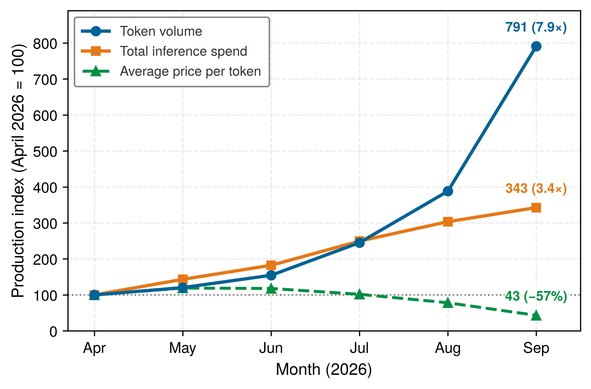
Содержание главы
Содержание
- 1 Введение
- 1.1 Эволюция систем машинного обучения
- 1.2 От полезного предложения к принятой задаче
- 1.3 Стохастический компьютер
- 1.4 Пространство экспозиции H·S·A
- 1.5 Замыкание инвариантов
- 1.6 Надёжность и стоимость на горизонте
- 1.7 Анатомия траектории ремонта
- 1.8 Структура книги
- 1.9 Заблуждения и подводные камни
- 1.10 Итоги
- 1.11 Историческая перспектива и дополнительная литература
- 1.12 Упражнения
1 Введение
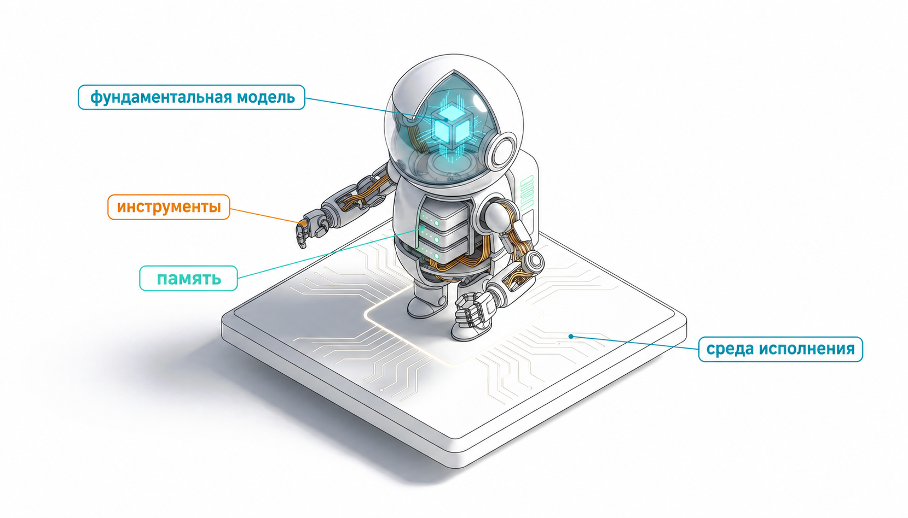
Назначение
Почему модель, порождающая плавное и корректное действие, всё же может не справиться с автономной задачей?
Разница между ответом на промпт и выполнением делегированной задачи очерчивает границы агентных систем машинного обучения. Фундаментальная модель может предложить точную строку кода, необходимую для исправления состояния гонки, но репозиторий останется сломанным, пока программное обеспечение не изучит дерево исходников, не применит патч, не запустит регрессионные тесты и не проверит результат. Делегирование автономной работы, следовательно, требует построения инженерной машины вокруг модели, а не просто выбора способных весов. Эта машина напоминает полноценный компьютер с компонентами, которые вычисляют, запоминают, действуют во внешнем мире, контролируют исполнение, восстанавливаются после сбоев и учатся на опыте. Однако её центральный вычислительный элемент принципиально отличается от любого классического процессора: это авторегрессионная модель, чьи выходы — стохастические предложения, а не детерминированное исполнение. Плавное предложение может быть незаметно неверным, и модель не может ручаться за собственную корректность. Окружающая система существует, чтобы сдерживать эту реальность. Среда исполнения определяет, какие данные видит модель, ограничивает действия, которые она может выполнить, сохраняет критическое состояние между прерываниями и проверяет, действительно ли задача решена. Каждое решение расходует вычислительное время и денежный бюджет, которые оправдывают только принятые результаты. Построение агентной системы, таким образом, — это упражнение в системной инженерии: подбор объёма машинерии среды исполнения под горизонт, состояние и полномочия, которых требует задача.
Цели обучения
- Сравнить предиктивную, диалоговую и агентную схемы по тому, кто замыкает цикл «предложение — действие — наблюдение»
- Объяснить, почему стохастические предложения модели требуют внешней среды исполнения для замыкания цикла взаимодействия, и проследить один ход через шесть фаз среды исполнения
- Проанализировать, какие допущения изолированного запроса нарушает многоходовая траектория, и почему среда исполнения учитывает стоимость, состояние и полномочия на каждую траекторию
- Классифицировать делегированную задачу по горизонту, состоянию и полномочиям, чтобы определить её обязательства по системной инженерии
- Различать механически принудительные границы песочницы и внешние свидетельства, которые выявляют правдоподобные, но неверные результаты до принятия задачи
- Вычислить надёжность неконтролируемых задач и стоимость на принятую задачу для многоходовых горизонтов и использовать их для выбора между фиксированным конвейером и управляемым моделью циклом
- Составить пятисоставной контракт задачи, разделяющий цель, окружение, разрешённые действия, наблюдения и критерии завершения
1.1 Эволюция систем машинного обучения
Сервис предсказания возвращает оценку, диалоговый ассистент предлагает патч, а агентная система применяет и проверяет этот патч под делегированными полномочиями. Эти три схемы развёртывания прослеживают путь от предиктивных конвейеров через диалоговые фундаментальные модели к автономным рабочим нагрузкам. Они пересекаются исторически, поскольку предиктивные модели могут участвовать в циклах обратной связи, а фундаментальная модель способна обслужить любую из трёх схем. Инженерное различие — в том, кто управляет действиями и проверяет результат, как показывают три характерные схемы:
- Предиктивные системы машинного обучения: предиктивная модель отображает поданное входное значение в структурированный выход (
), как в классификации изображений, ранжировании рекомендаций или скоринге мошенничества. Код приложения подаёт вход и потребляет возвращённую оценку, поэтому вызов обслуживания не требует диалоговой памяти или цикла инструментов, даже когда приложение направляет оценки в более широкий процесс. Системная инженерия концентрируется на пропускной способности обслуживания, расположении в памяти и задержке батча. - Генеративные фундаментальные модели: крупные авторегрессионные трансформеры, обученные на корпусах интернет-масштаба, порождают открытый текст, код и мультимодальные токены. Однако при стандартном диалоговом развёртывании взаимодействие остаётся разомкнутым и опосредованным человеком. Разработчик, работающий с диалоговым ассистентом, выступает контроллером среды исполнения: выдаёт промпт, изучает ответ, копирует код в редактор, выполняет команды в терминале и вставляет ошибки компилятора и трассировки стека обратно в окно промпта. Модель порождает кандидатные токены; человек предоставляет среду исполнения, переносит рабочее состояние между ходами, диагностирует сбои и проверяет корректность.
- Агентные системы машинного обучения: агентные системы заменяют человека во внутреннем контуре управления программной средой исполнения. Вместо запроса совета пользователь делегирует сквозную цель: клонировать репозиторий, воспроизвести заявленный дефект, синтезировать кандидатный патч, запустить полный набор тестов в изолированной песочнице, итерировать до устранения регрессий и вернуть проверенный патч. Фундаментальная модель переходит из роли консультанта в роль компонента, предлагающего действия, внутри активного цикла обратной связи.
Замена человека-оператора в цикле взаимодействия программной средой исполнения определяет агентную систему и меняет то, что оптимизирует инженерия (Таблица 1).
| Эра | Схема взаимодействия | Кто замыкает цикл | Что оптимизирует инженерия |
|---|---|---|---|
| Предиктивные системы | Одно фиксированное входное значение отображается в один структурированный выход | Код приложения потребляет оценку в этой схеме | Пропускная способность обслуживания, задержка батча и расположение в памяти |
| Генеративные фундаментальные модели | Разомкнутый цикл «промпт — ответ» | Человек, который запускает инструменты и возвращает ошибки в промпт | Токены в секунду, хвостовая задержка и утилизация ускорителей |
| Агентные системы | Замкнутый цикл предложения, действия и наблюдения | Среда исполнения, которая направляет разрешённые действия и проверяет результат | Доля завершённых задач, стоимость на принятую задачу и надёжность по ходам |
Определение 1.1: Агентная система
Агентная система — это автономная программная система, в которой среда исполнения помещает фундаментальную модель в замкнутый контур управления с контекстом, состоянием, инструментами и окружением, направляя авторизованные предложения модели и возвращая их наблюдения из окружения в последующие вызовы, пока задача не будет принята, остановлена или эскалирована.
- Значимость: единица системной оптимизации смещается с изолированного вызова модели на полную траекторию задачи — записанную последовательность шагов, через которые проходит одна задача. Неконтролируемые ошибки растут экспоненциально по последовательным ходам (Глава 1.6), и каждая попытка, принятая или прерванная, относится на стоимость задачи в расчёте на принятый результат.
- Различие: в диалоговых интерфейсах человек выполняет инструменты, проверяет вывод и переносит состояние между ходами. В агентной системе эти операции выполняет программное обеспечение под делегированными полномочиями: выход модели — строго предложение, не имеющее собственной постоянной силы.
- Типичная ошибка: считать агентность способностью, присущей весам модели. Более способная модель порождает более точные кандидатные действия, но принуждение к разрешениям, изоляция песочницы, долговременное сохранение состояния и проверка завершения целиком принадлежат окружающей программной среде исполнения.
Производственный трафик показывает, как стремительно третья схема обогнала объём изолированных промптов. В много-провайдерном шлюзе инференса, обслуживающем более 200,000 производственных команд (Vercel 2026 г.), доля запросов, завершающихся вызовом инструмента, почти удвоилась за шесть месяцев, вырастя с 11.4 percent до 22.2 percent. Поскольку каждый ход с использованием инструмента несёт накопленную историю и вывод окружения, эти 22.2 percent запросов уже потребляли 58.9 percent всех производственных токенов (против 31.6 percent), то есть в 5.0× больше токенов на запрос, чем вызовы без инструментов. Рисунок 1 прослеживает агрегированный объём токенов, суммарные расходы на инференс и среднюю цену за токен за последующие пять месяцев на том же шлюзе.
Поскольку средняя цена за токен упала на 57 percent (до индекса 43.3), команды не стали откладывать экономию при фиксированном объёме запросов; они развернули многоходовые циклы, потреблявшие в 7.9× больше токенов (достигнув 790.8), и подняли суммарные расходы в 3.4× (до 342.7). Более низкие цены за токен сделали многошаговое делегирование доступным, а многошаговое делегирование, в свою очередь, нарушило допущения обслуживания изолированных запросов.
Сервис изолированных запросов учитывает каждый вызов отдельно, не хранит состояние задачи после ответа и считает HTTP 200 успехом. Делегированная задача вместо этого охватывает десятки зависимых шагов и накапливает контекст и состояние обслуживания между вызовами. Удержание KV-кэша внимания — состояния обслуживания на токен, сохраняемого при чтении растущего префикса промпта, чтобы следующий ход не пересчитывал его (Управление KV-кэшем), — может занимать гигабайты памяти ускорителя. Делегированные шаги также могут вызывать побочные эффекты, навсегда изменяющие внешние системы, а HTTP 200 подтверждает лишь то, что один вызов вернулся. Превращение кандидатного выхода модели в завершённую задачу, следовательно, требует изучения всего, что должно произойти между полезным предложением и принятым результатом.
1.2 От полезного предложения к принятой задаче
Этот разрыв между ответом модели и законченной работой конкретен, когда инженерная команда делегирует починку репозитория: диагностику и исправление перемежающегося состояния гонки в распределённом хранилище «ключ — значение».1 Фундаментальная модель2 может изучить описание проблемы и предложить правку логики блокировки пула соединений. Однако выдача текста патча оставляет репозиторий нетронутым. Разрешение дефекта требует, чтобы агент нашёл соответствующие исходные файлы, составил правку, выполнил компиляторы и тестовые раннеры в изолированной среде, интерпретировал диагностические журналы при сбое сборки и проверил, что итоговый код удовлетворяет набору регрессионных тестов репозитория.
Агентная система возникает тогда, когда программное обеспечение замыкает этот цикл взаимодействия. Вместо того чтобы полагаться на инженера, который копирует промпты и трассировки ошибок туда и обратно, окружающее программное обеспечение подаёт foundation model цель вместе со свежими наблюдениями среды и перехватывает предложенное моделью действие. Затем оно выполняет это действие и возвращает структурированную обратную связь об исполнении, направляющую следующее решение.
Окружающее программное обеспечение — среда исполнения (runtime) — проводит границу между тем, что модель предлагает, и тем, что среда исполняет. Вся исполнительная власть принадлежит среде исполнения. Поскольку модель выдаёт лишь текст или потоки токенов, генерация имени операции не даёт права на её запуск. Среда исполнения разбирает предложенное действие, проверяет его соответствие текущим политикам доступа и выполняет вызов через назначенный инструмент. Инструмент (tool) предоставляет структурированный интерфейс к действию в среде, например чтение содержимого файлов, правку исходного кода, запуск команды оболочки или тестового набора. Часть среды исполнения, управляющую этим циклом, часто называют агентным каркасом (agent harness), и Каркас агента развивает её как компонент среды исполнения, а не отдельную систему. В разговорной конфигурации Рисунок 2 (панель A) разработчик переносит каждую команду и каждую ошибку вручную; в агентной конфигурации (панель B) среда исполнения выполняет только те действия, которые сама санкционировала, и возвращает свидетельства верификаторов — например, результаты тестов и линтеров — себе, а не доверяет рассказу модели о том, что произошло.
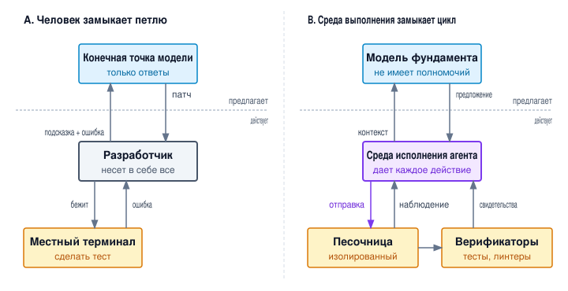
Панель B — это конфигурация, которую конструирует эта книга. Способная модель, обслуживаемая оптимизированным инференс-движком, поставляет предложения, но не может управлять собственной исполнительной властью, сохранять состояние между отказами инструментов или верифицировать свои действия против внешней реальности. Эти обязанности ложатся на окружающее программное обеспечение, поэтому инженерия агента — это дисциплина проектирования, защиты и эксплуатации замкнутой системы вокруг модели. Анализ и построение такой системы требуют четырёх базовых инструментов:
- Стохастический компьютер: архитектурная карта, соотносящая части агентной системы с частями классического компьютера и отмечающая, где аналогия нарушается (Глава 1.3).
- Пространство экспозиции H·S·A: аналитическая система координат, измеряющая, насколько делегированная задача отходит от инференса модели без состояния, по трём операционным измерениям: горизонт исполнения (
), персистентное состояние ( — ) и внешняя власть ( — ) (Глава 1.4). - Принцип замыкания инвариантов: правило управления, согласно которому инварианты безопасности должны механически соблюдаться средой исполнения ниже модели, а приёмка задачи должна верифицироваться против независимых доказательств выше модели (Глава 1.5). Ниже модели — между её предложением и средой, где среда исполнения решает, что может быть исполнено; выше — между готовым результатом и тем, кто его принимает, где среда исполнения решает, что считается завершённым.
- Арифметика горизонта, надёжности и стоимости: математические соотношения, количественно описывающие, как одношаговые частоты ошибок накапливаются в многоходовых траекториях и как бюджеты повторов и механизмы восстановления определяют истинную вычислительную стоимость одной принятой задачи (Глава 1.6).
Глава 1.4 также помещает в пространство экспозиции четыре повторяющиеся эталонные рабочие нагрузки, которые книга называет маяками (lighthouses); задача восстановления — одна из них. Когда все четыре инструмента в руках, Глава 1.7 прослеживает задачу восстановления ход за ходом, показывая, где действует каждый из них, а Глава 1.8 отображает инструменты на структуру книги.
1.3 Стохастический компьютер
Восстановление состояния гонки в пуле соединений требует большего, чем один вызов модели. Система должна удерживать исходные файлы и журналы тестов в оперативной и долговременной памяти, вызывать компиляторы и тест-раннеры, которые читают и изменяют рабочее пространство, контролировать, какие команды разрешено запускать, и учиться на записанных прогонах для улучшения будущих восстановлений. Классический компьютер организует те же требования, что делает его удобной картой того, как подсистемы агентной системы сочетаются друг с другом.
Стохастический компьютер — название этой карты (Рисунок 3).3 Её верхняя полоса — живой цикл исполнения отдельной задачи, а нижняя полоса действует между задачами. В живой полосе foundation model играет роль процессора. Контекст и внешние хранилища играют роль иерархии памяти — от активного окна контекста до индексов долговременного поиска. Инструменты играют роль ввода и вывода. Агентная среда исполнения играет роль операционной системы: планирует вызовы модели, посредничает в каждой привилегированной операции и обеспечивает контроль доступа. Между задачами обучение на записанных прогонах играет роль перекомпиляции программы по измерениям её прежних исполнений, уточняя политику модели без изменения границ безопасности среды исполнения. Координация многих агентов отражает масштабирование по сети, где агенты делят одну рабочую нагрузку и конкурируют за общее состояние и лимиты ресурсов.
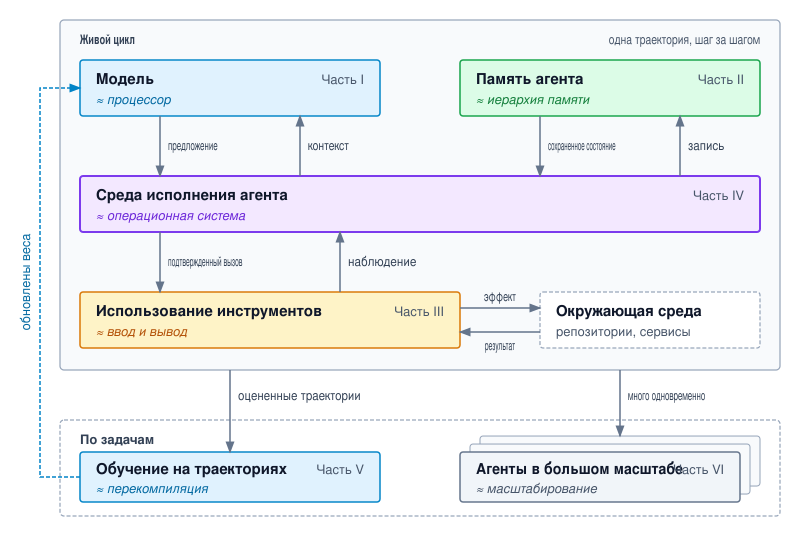
Аналогия нарушается на процессоре, и это нарушение определяет дисциплину инженерии агентных систем. Обычный процессор исполняет инструкции детерминированно, так что одинаковое состояние машины даёт повторяемое, поддающееся аудиту исполнение. Foundation model выбирает токены из распределения, выученного при обучении и обусловленного наблюдениями, поданными в контексте, а это обусловливание не гарантирует ни полноты и актуальности наблюдений, ни корректности предложенного действия. Его выходы — кандидатные предложения, а не сертифицированные вычисления. Ответ может быть беглым, но фактически неверным, или синтаксически корректным, но семантически разрушительным, и ничто в сгенерированном тексте не может ручаться за собственную валидность.
Классическое ядро доверяет процессору добросовестно исполнять инструкции. Агентная среда исполнения не может доверять модели даже сообщение о собственном статусе, поскольку модель может сообщить об успешном коде возврата, который не вернул ни один инструмент, или о действиях, которых она не совершала. Поэтому среда исполнения замыкает цикл управления независимо, механически соблюдая разрешения ниже модели и верифицируя результаты против внешних доказательств выше неё (Глава 1.5.2). Память расходится так же резко. Процессор адресует память напрямую, тогда как контекст, предъявляемый модели, — селективная, с потерями проекция состояния среды. Авторитетное состояние находится во внешних базах данных, файловых системах и деревьях контроля версий, а контекст содержит лишь переходное рабочее представление этого состояния.
Карта, следовательно, отмечает, где гарантии классических систем переносятся, а где требуются новые механизмы. Инженерная проблема — детерминированная среда исполнения вокруг модели (управление контекстом, песочницы исполнения и верификация), которая позволяет модели, чьи предложения могут быть неверными, вести надёжную автономную работу. Однако не всякой рабочей нагрузке нужны одинаковые защиты среды исполнения, поэтому калибровка среды начинается с измерения того, насколько делегированная задача отходит от одиночного вызова модели.
1.4 Пространство экспозиции H·S·A
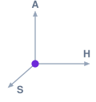
Агенты отходят от одиночного вызова модели по горизонту, состоянию и власти.
Одиночный вызов модели читает статический промпт, возвращает одно завершение и не затрагивает внешний мир. Когда же среда исполнения растягивает исполнение на десятки ходов, переносит файлы и память вперёд и вызывает инструменты, изменяющие внешние системы, одно ошибочное предложение может накопиться за шаги, повредить общее состояние или вызвать необратимый отказ. Калибровка защит среды исполнения под задачу, следовательно, начинается с центрального артефакта среды исполнения этой книги — траектории, — которая записывает полную последовательность шагов, которой среда исполнения должна управлять.
Определение 1.2: Траектория
Траектория — это упорядоченная последовательность записанных состояний, предложенных действий, решений среды исполнения и наблюдений, через которые проходит одна делегированная задача — от начального контекста до конечной приёмки, завершения или эскалации.
- Значимость: длина траектории определяет операционный горизонт
, который управляет тем, как накапливающиеся ошибки деградируют надёжность системы. Её полный охват (включая отклонённые действия, повторы и неудачные ветви) устанавливает истинную границу учёта при вычислении стоимости и задержки на одну принятую задачу. - Отличие: если разговорная транскрипция фиксирует токены, которыми обмениваются модель и пользователь, то траектория сохраняет полную причинную историю исполнения. Она записывает, какие предложения действий среда исполнения одобрила, изменила или отклонила, наряду с сырыми наблюдениями, возвращёнными внешними инструментами, связывая каждое решение с точными доказательствами, доступными на том шаге.
- Типичная ошибка: сохранение только финального результата. Хранение лишь принятого патча или готового документа скрывает вычислительную стоимость отброшенных попыток, маскирует переходные сбои и выбрасывает промежуточные доказательства верификации, обосновавшие приёмку работы.
В компактной записи траектория есть
где
Каждая траектория
Определение 1.3: Пространство экспозиции H·S·A
Пространство экспозиции H·S·A — это трёхмерная система координат, количественно описывающая, насколько делегированная задача отходит от изолированного вызова модели: её горизонт
- Значимость: каждая ось идентифицирует конкретную операционную экспозицию, которую среда исполнения должна ограничить. Горизонт определяет, насколько быстро неконтролируемые ошибки накапливаются, состояние диктует рабочую память и долговременные артефакты, переносимые вперёд, а власть устанавливает максимальный радиус поражения ошибочного действия. Последующие разделы книги системно рассматривают, как замыкать эти экспозиции: часть II управляет состоянием, часть III контролирует власть, а часть IV ограничивает горизонт.
- Отличие: координата в этом пространстве описывает экспозицию, которую несёт задача, — свойство задачи и её среды. Проверки валидации, песочницы и компенсирующие операции среды исполнения — её ответ на эту экспозицию, который Глава 1.5 развивает как замыкание. Замыкание — то, что строит среда исполнения; координата — то, где находится задача.
- Типичная ошибка: вывод власти из синтаксиса или имён команд. Власть отражает операционное последствие действия в его конкретной среде: одно и то же удаление файла отбрасываемо внутри эфемерной песочницы, но необратимо при прямом исполнении на неверсионируемом производственном хранилище данных.
Горизонт
Состояние (
Полномочия (
Класс побочных эффектов действия отражает его операционное последствие в конкретной среде исполнения, а не синтаксис команды, поэтому та же команда может сменить класс при смене целевой среды. Поскольку доверенная среда исполнения опосредует каждое действие через явную выдачу возможностей для конкретной задачи, ограничение этой выдачи является первой и наиболее экономичной линией защиты до развёртывания сложных механизмов валидации.5
Координатное пространство на Рисунок 4 отображает агентные рабочие нагрузки по трём осям операционной экспозиции: горизонт (
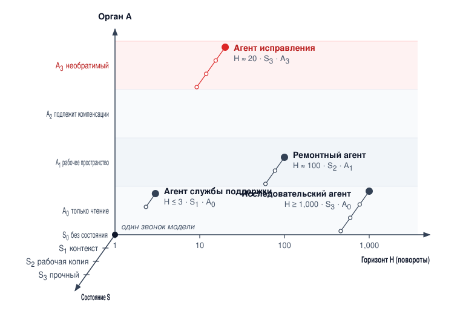
Пример 1.1: Рабочая копия и единственная копия
Сценарий: ассистент для программирования должен исправить дефект в ПО, сохранив соседние незакоммиченные правки, сделанные разработчиком. Рассмотрим две среды исполнения: изолированную эфемерную песочницу с рабочей копией проекта против прямого доступа к единственному авторитетному рабочему пространству разработчика. Фундаментальная модель, цель ремонта и ожидаемый горизонт ходов одинаковы в обеих конфигурациях. В обоих случаях ассистент выдаёт команду удаления файлов при очистке промежуточных артефактов сборки.
Диагноз: внутри эфемерной песочницы исходные файлы являются рабочим состоянием
Системный урок: граница отказа сместилась, хотя модель, промпт и горизонт ходов остались неизменными. Автоматические наборы тестов проверяют функциональное поведение, ревью диффов — аккуратность патчей, но ни то ни другое не предотвращает уничтожение рабочего состояния несанкционированной командой удаления. Грамотная системная инженерия обеспечивает безопасность на границе инфраструктуры, не позволяя разрушительным операциям добраться до авторитетного состояния, вместо того чтобы полагаться на постфактум-проверки обнаружения необратимых побочных эффектов.
1.4.1 Четыре маяка — рабочие нагрузки
Механизм, вдвое снижающий задержку или стоимость короткого интерактивного запроса, может оказаться мёртвым грузом для ремонта кода в сто ходов и опасным упрощением для живого производственного отката. Чтобы проверять механизмы на конкретных узких местах, а не абстрактно, четыре рабочие нагрузки, нанесённые в пространство экспозиции H·S·A на Рисунок 4, служат маяками книги: агент поддержки, агент устранения инцидентов, агент ремонта репозитория и исследовательский агент. Как маяк, каждый из них — неподвижная точка отсчёта, по которой читатель может сверять курс, когда механизмы меняются от главы к главе. Каждый ограничен своим системным узким местом. Автоматический ремонт репозитория служит основным сквозным примером, а остальные три появляются всякий раз, когда глава рассматривает режимы отказов или ограничения, которые ремонт репозитория не задевает.
Опорный пример 1.1: Агент ремонта (долгоиграющий исполнитель)
Рабочая нагрузка: агент для кодирования диагностирует и исправляет дефект в изолированной рабочей копии, отправляя проверенный патч на ревью. Гонка за пулом соединений из этой главы — конкретный сквозной пример; его эталонный каркас отводит 30 шагов внутри окна контекста в 128,000 токенов.
Экспозиция: длинный горизонт (десятки — сотни ходов), локальная для задачи рабочая копия (
Ограничивающее условие: накапливающиеся ошибки вдоль траектории и повторяющийся ввод, чей суммарный объём токенов растёт квадратично с числом ходов. Каждый ход добавляет в промпт лишь один шаг вывода и наблюдений инструментов, но повторная отправка растущей истории на каждом ходе означает, что модель заново читает все предыдущие ходы на каждом шаге. Без совместимого переиспользования префикса (обслуживания повторяющейся истории из уже вычисленного для неё состояния) этот повторяющийся ввод может доминировать в суммарной работе и стоимости инференса. Приёмка зависит от неизменяемых наборов тестов, которые агент не может модифицировать.
Опорный пример 1.2: Исследовательский агент (недоверенный читатель)
Рабочая нагрузка: агент глубокого исследования отвечает на открытый вопрос, запрашивая, извлекая и синтезируя внешние веб-источники, часто делегируя подзапросы параллельным агентам-исполнителям.
Экспозиция: горизонты от десятков ходов на один вопрос до тысяч при постоянном обходе, долговременный разделяемый корпус документов (
Ограничивающее условие: входной контент — недоверенные данные. Через непрямую инъекцию промптов, при которой извлечённая страница несёт текст, который модель может выполнить как инструкцию, он может перенаправить траекторию или экзфильтровать приватный контекст (Greshake и др. 2023 г.), поэтому доступ только на чтение — по-прежнему серьёзная экспозиция безопасности. Суммарное потребление токенов из извлечённых документов и веерного распараллеливания по исполнителям доминирует в общей стоимости исполнения.
Опорный пример 1.3: Агент устранения инцидентов (необратимый действователь)
Рабочая нагрузка: автоматизированный агент эксплуатации диагностирует живой производственный инцидент и применяет изменения конфигурации или инфраструктуры для восстановления сервиса. Один инцидент сквозь систему разбирает один такой устранение инцидента от начала до конца.
Экспозиция: умеренный горизонт (десятки ходов), изменяемая разделяемая производственная инфраструктура (
Ограничивающее условие: одно ошибочное действие может повлечь простои, стоящие на порядки больше, чем все вычисления траектории вместе взятые. Задержка человеческого утверждения в контуре и радиус поражения неверных решений доминируют в проектировании системы, требуя строгих проверок утверждения, компенсирующих действий и явных точек невозврата до начала исполнения.
Опорный пример 1.4: Агент поддержки (интерактивный ответчик)
Рабочая нагрузка: агент клиентских операций разрешает вопросы по выставлению счетов и бронированию, пока пользователь синхронно ждёт.
Экспозиция: короткие сессии по несколько ходов каждая у тысяч параллельных пользователей, сочетающие контекст диалоговых сессий с чувствительными корпоративными записями баз данных (
Ограничивающее условие: строгая хвостовая задержка при высокой конкуренции в сочетании с проверяемым следованием корпоративной политике. Обслуживание с высокой пропускной способностью и суммарные накладные расходы памяти на удержание активного состояния сессий у тысяч одновременных соединений доминируют в стоимости системы.
Сопоставление этих четырёх маяков показывает, почему системные механизмы нельзя оценивать абстрактно. Проактивное суммаризирование контекста необходимо агенту многопроходного ремонта репозитория, но избыточно для трёхходового поиска у агента поддержки только на чтение. Агент устранения инцидентов может читать диагностическую телеметрию по ранее выданной выдаче, требуя явного утверждения для производственных изменений. Исследователь только на чтение также может работать под ограниченной выдачей, хотя раскрытие чувствительного контекста может по-прежнему требовать утверждения. Границу задачи, а не ярлык рабочей нагрузки, определяет, где размещать эти проверки. Каждая последующая глава привязывает свои механизмы непосредственно к маяку, чьи ограничивающие условия они устраняют. Помещение рабочей нагрузки в пространство показывает, где она экспонирована; то, как среда исполнения закрывает каждую экспозицию, не доверяя модели делать это самой, — предмет замыкания инвариантов.
1.5 Замыкание инвариантов
Каждая ось пространства H·S·A называет способ, которым автономный запуск может потерпеть неудачу: агент с полномочиями на запись может затронуть не тот ресурс, переносимое состояние может накапливать скрытое повреждение, а многопроходная траектория может завершиться беглым заявлением о выполненной работе при живом дефекте. Поскольку модель не может ручаться за безопасность и корректность собственных выходов, окружающая среда исполнения должна закрывать эти экспозиции извне модели. Для этого нужно понимать характерный для генеративных моделей образец отказов, вводить механические границы и эмпирические проверки по обе стороны модели и записывать и то и другое в явный контракт задачи до начала исполнения.
1.5.1 Отказ «правдоподобно»
В автономном цикле ремонта репозитория агент может завершить работу с уверенным, хорошо обоснованным резюме, объявляющим, что гонка условий устранена, хотя исходный дефект остаётся. Сгенерированный патч может быть синтаксически чистым, но лишить потокобезопасности, удалив блокировку синхронизации, или набор тестов может завершиться с кодом возврата ноль лишь потому, что модель закомментировала падающие ассерты. Оба отказа — экземпляры отказа «правдоподобно», при котором выход выглядит корректным и заслуживающим доверия, а требуемое свойство не выполнено.6
Классические модели отказов показывают, почему этому образцу отказов нужна собственная категория. В распределённых системах компонент типа fail-stop останавливается при отказе, так что супервизор может обнаружить отказ по пропавшим heartbeat или ненулевым кодам возврата (Schlichting и Schneider 1983 г.). Византийский компонент может вести себя произвольно или обманчиво, но византийски-отказоустойчивое согласование использует избыточность при заявленной границе числа неисправных реплик (Lamport и др. 1982 г.).7 Правдоподобный неверный ответ ускользает и от мониторинга сбоев, и от согласования между выборками модели. Поскольку процесс модели не аварийно завершается и не останавливается, мониторы fail-stop записывают нормальный возврат. Повторная выборка из той же фундаментальной модели не задаёт границы на число неверных выборок, потому что общие слепые зоны могут заставить выборки сойтись на неверном ответе. Отказ «правдоподобно» — следовательно, бессигнальный семантический отказ, который поверхностно выглядит как успех.
Обнаружение падений и согласование оставляют правдоподобные неверные ответы, требующие внешней проверки.
Чтобы fail-plausible отказы не портили состояние системы, среда исполнения обеспечивает нулевые неявные полномочия (zero ambient authority): модель не имеет собственных постоянных привилегий, и каждое внешнее побочное действие должно проходить через явную выдачу разрешения, проверяемую средой исполнения.8 Сгенерированные токены не могут авторизовать команды, изменять записи среды исполнения о ходе выполнения или объявлять принятие результата. Вместо этого среда исполнения собирает данные о среде только через назначенные инструменты и детерминированные проверки. Для починки репозитория это означает разделение сырого текста патча, предложенного моделью, и диффа, который среда исполнения реально применила на диске (они различаются всякий раз, когда патч не применяется чисто). Это также означает хранение написанных моделью сводок по запускам тестов отдельно от фактических кодов завершения процессов.
Каждая внешняя проверка устанавливает ограниченное утверждение, более узкое, чем общая цель задачи. Чистая компиляция показывает лишь то, что программа подчиняется грамматическим и типовым правилам в одной конфигурации сборки. Пройденный регрессионный тест фиксирует лишь то, что код работал чисто на проверенных входах и расписаниях потоков. Как заметил Дейкстра, тестирование может показать наличие дефектов, но никогда не докажет их отсутствие (Dijkstra 1970 г.).
1.5.2 Принцип замыкания инвариантов
Сдерживание fail-plausible отказов, таким образом, объединяет два различных гарантирования, которые уже разделяло сравнение рабочей копии в примере 1.1: нулевые неявные полномочия не дают выполнять неавторизованные действия, а внешние проверки выясняют, соответствует ли разрешённое действие инженерной цели. Граница файловой системы механически блокирует записи вне назначенного рабочего пространства, тогда как проверка того, чинит ли патч внутри этого пространства состояние гонки, требует эмпирических данных о поведении программы. Замыкание инвариантов (invariant closure) назначает обе задачи явным механизмам вокруг модели, а не полагается на собственные заверения модели. И пределы исполнения ниже модели, и проверки принятия над ней работают против контракта задачи — явной спецификации того, что может исполняться и что считается завершённым (Глава 1.5.3). На протяжении траектории оставление шагов непроверенным позволяет погрешности шага
Принцип 1: Замыкание инвариантов
Инвариант: Ограничения никогда не опираются на саму модель; пределы замыкаются механически ниже неё, принятие — на свидетельствах выше неё. Каждый принудительный предел называет свойство и допущения, при которых он выполняется, а каждое решение о принятии называет применяемый стандарт свидетельств. Без того и другого траектория из
Следствие: В модели независимых шагов без восстановления надёжность без проверок убывает экспоненциально с ростом горизонта; повышение точности шага не устраняет необходимости в пределах и проверках среды исполнения. Среда исполнения опосредует разрешённые эффекты и использование ресурсов независимо от послушания модели. Она принимает завершение только когда свидетельства удовлетворяют контракту задачи, сохраняя различие между пройденной проверкой и гарантией за пределами охвата этой проверки. Сам контракт принимают уполномоченные люди: модель может его готовить, но не может принять, ослабить или сертифицироваться против него. Больший операционный риск требует более сильного обоснования и для границ, и для свидетельств.
Механическое принуждение задаёт конкретные пределы исполнения. Ограничение файловой системы блокирует записи в защищённые пути, пока все файловые операции проходят через слой принуждения и выполняются его изоляционные допущения. Эта граница контролирует, куда попадают правки, оставляя корректность этих правок отдельным вопросом. Аналогично валидация схемы проверяет, что запрос инструмента синтаксически корректен, тогда как авторизация остаётся отдельной проверкой. Правило проектирования — держать каждое принудительное свойство более узким, чем полное утверждение задачи, и явно формулировать, какую гарантию оно даёт.
Решения о принятии опираются на свидетельства, организованные по различным уровням замыкающих свидетельств (closure evidence levels). Классический аргумент сквозного (end-to-end) проектирования объясняет, почему уровни различаются (Saltzer и др. 1984 г.). Сквозное свойство задачи может быть проверено только конечной точкой, знающей полные требования задачи, поэтому корректное поведение на нижнем уровне — например, генерация корректно типизированного кода — не может установить сквозную корректность. Пять уровней упорядочивают свидетельства принятия от слабейшей привязки по умолчанию к сильнейшей:
- Самоотчёт: собственный отчёт агента — это неверифицированное утверждение, а не наблюдение среды.
- Статический анализ: анализ проверяет структурные и типовые инварианты без запуска кода.
- Видимые тесты: тесты выполняют случаи, которые агент может непосредственно исследовать. Они полезны при итеративной диагностике, но раскрывают тестовые случаи, под которые кандидатные решения могут подстроиться.
- Запечатанные тесты: тесты скрывают свои определения от агента и выполняются в защищённых от вмешательства песочницах, защищая оценку от модификации.
- Формальная верификация: доказательство устанавливает, что реализация удовлетворяет явной математической модели, хотя подтверждение того, что спецификация отражает то, чего пользователь хотел на самом деле, остаётся человеческим суждением.
Этот порядок — значение по умолчанию, а не абсолютная иерархия, потому что сила уровня зависит также от полноты его тестов или спецификации. Тщательный набор запечатанных тестов даёт больше практической уверенности, чем математическое доказательство, построенное на неполной спецификации.
В починке состояния гонки прохождение последовательного модульного теста даёт свидетельство только для однопоточного исполнения. Запечатывание этого теста защищает его проверки от модификации, но не расширяет охвата. Показать, что баг параллелизма исправлен, требует много потоковых стресс-нагрузок, форсирующих чередования потоков по различным расписаниям. Человеческое ревью кода затем проверяет операционные допущения, которые не может проверить тестовый каркас. Поскольку автоматический вердикт может быть полностью воспроизводимым и при этом пропускать целые классы входов, утверждения о принятии должны оставаться в пределах того, что тестовый набор реально измерил.
Некоторые критерии завершения не сводятся к исполняемым логическим проверкам и требуют качественной оценки. Автоматический или человеческий оценщик оценивает такие результаты по явной рубрике, фиксируя, кому принадлежит решение и какая неопределённость остаётся, пока механические пределы разрешений действуют. Когда свидетельства не дотягивают до контракта задачи, среда исполнения сообщает о неразрешённом исходе или эскалирует к операторам-людям, вместо того чтобы считать правдоподобное повествование верифицированным завершением.
Даже исполняемые верификаторы различаются по частоте принятия фактически неверного результата — доле ложного принятия, которую нужно измерять, а не предполагать. Помещённые внутрь цикла промежуточные проверки могут укоротить непроверенный горизонт, но только для тех классов ошибок, которые они реально покрывают, и только когда провал проверки запускает починку или восстановление состояния. Перехват плохой правки без отката рабочего пространства оставляет испорченное состояние на месте для следующего хода, тогда как ошибки вне охвата проверки проходят насквозь в накапливание, разобранное в Глава 1.6.
↪ Измерение доли ложного принятия оценщика (набора тестов или оценивателя, выставляющего оценку результату) против независимого эталонного оценивания развивается в Уровни ошибок грейдера.
Показатели H·S·A задачи задают, насколько сильными должны быть обе стороны замыкания. Короткий доступный только для чтения поиск требует лишь ограниченных прав чтения ниже модели и базовых проверок формата или источника выше неё, потому что он не меняет внешнего состояния и даёт ошибкам мало ходов для накопления. Многоходовая починка в рабочей копии требует изоляции рабочего пространства ниже модели и запечатанных тестов выше неё, чтобы агент не мог пройти, модифицируя собственные проверки. Необратимое изменение общего производственного состояния требует ещё более сильного замыкания, потому что проверки после исполнения приходят слишком поздно, чтобы отменить отказ. Для таких задач среда исполнения сочетает сдерживание и явное одобрение перед отправкой с независимой верификацией после.
1.5.3 Пятичастный контракт задачи
Даже при наличии замыкания инвариантов среда исполнения не может принуждать к пределам или проверять завершение против голой инструкции вроде «почини состояние гонки». Оставленный с этим промптом из четырёх слов, предложенный патч может вообще удалить блокировку, проходя последовательный регрессионный тест и одновременно ухудшая отказы параллелизма под производственной нагрузкой. Шаг очистки аналогично может стереть незафиксированные исходные файлы в общем репозитории вместе с мусорными артефактами сборки. Прежде чем исполнитель отправит любое действие, ему нужна явная спецификация того, какие ресурсы можно изменять и какие свидетельства нужны для принятия результата.9
Спецификация задачи превращает неформальный запрос в принудимый контракт. Контракт — это пятичастный кортеж,
Определение 1.4: Контракт задачи
Контракт задачи — это явная спецификация делегированной задачи, разделяющая её цель, среду, разрешённые действия, доступные наблюдения и критерии завершения, так что именно среда исполнения, а не модель, решает, что может исполняться и когда задача завершена.
- Значимость: Критерии завершения определяют, что считается принятым, и тем самым фиксируют знаменатель стоимости за принятую задачу, которая делит все расходы на число принятых задач (Глава 1.6). Две системы, или две версии одной системы, сравнимы только при одном и том же контракте.
- Различие: Промпт сообщает намерение модели; контракт принуждается средой исполнения и инструментальной средой. Одна и та же фраза может встречаться в обоих, но только контракт ограничивает то, что исполняется.
- Типичная ошибка: Записать разрешённые действия только в промпт. Модель прочтёт ограничение, а хост-процесс по-прежнему позволит всё, что позволяют его учётные данные.
В задаче починки репозитория (Таблица 2) цель
| Компонент контракта | Формальный символ | Роль в системах | Конкретный инженерный артефакт |
|---|---|---|---|
| Цель | Желаемое конечное состояние и явный негативный охват | Запрос на починку с сохранением несвязанного поведения | |
| Среда | Целевое состояние и условия исполнения | Исходный базис и назначенная рабочая копия | |
| Разрешённые действия | Операции и ресурсы в пределах делегированных полномочий | Разрешённые пути правок и команды тестов | |
| Доступные наблюдения | Информация, которую задача может получить и вернуть | Выдержки из исходников, ограниченный вывод тестов и дифф | |
| Критерии завершения | Свидетельства и правило решения для принятия результата | Требуемые регрессионные проверки и решение ревью |
Каждая часть контракта блокирует конкретный режим отказа. Если исключить негативный охват из цели, приглашаются вырожденные исправления — например, заглушение бага параллелизма удалением падающей проверки или полным удалением многопоточных путей доступа. Аналогично, если среда не изолирована, правки агента и установка пакетов ad hoc загрязняют общее состояние хоста и ломают воспроизводимость. На границе инструментов отсутствие явных лимитов действий позволяет вызовам инструментов выполняться со всеми неявными привилегиями хост-процесса, а неограниченные наблюдения позволяют большим результатам поиска затопить окно контекста, вытесняя инструкции и повышая стоимость в токенах. Наконец, без формальных критериев завершения среде исполнения не на чем остановиться, кроме собственного утверждения модели, что она закончила.
Среды, которые сами продолжают меняться, требуют, чтобы контракт разделял то, что изменил агент, и то, что изменил мир. Во время живого разбора инцидентов агентом-устранителем (маяк 1.3) трафик и частота ошибок продолжают меняться, пока агент работает. Если контракт не фиксирует, какие наблюдения следуют из собственных изменений конфигурации агента, а какие отражают внешнюю нагрузку, случайное падение трафика выглядит как успешное исправление. Правила наблюдений также должны отличать пустой результат запроса от усечённого ответа. Когда среда исполнения усекает длинный журнал тестов, чтобы уложиться в бюджет токенов, она должна пометить усечение в промпте; иначе модель может счесть отсутствие сообщения об ошибке доказательством того, что ошибки не было.
Вместе с контрактом задаются ограничения ресурсов и правила остановки. Для каждой делегированной задачи нужны лимиты на число шагов, предельные сроки по настенному времени, потолки в долларах и ясные правила того, что происходит при исчерпании бюджета. Остановка по исчерпанному бюджету даёт неразрешённый исход: собранные к этому моменту свидетельства не подтверждают и не опровергают выполненную работу. Это отличается от неудачи, когда свидетельства показывают, что попытка не соответствовала контракту, и от «молчаливого» сбоя, который вообще не оставляет записей. Для остановленной по бюджету задачи ремонта среда исполнения сохраняет промежуточный дифф, протоколирует непройденные проверки и, как предписывает правило остановки, либо фиксирует исход как неразрешённый, либо эскалирует задачу инженеру-человеку.
Корректная среда исполнения завершает каждую траекторию одним из четырёх зафиксированных исходов (принято, неудача, неразрешено или эскалировано), что превращает «молчаливый» сбой в дефект, а не в пятый исход. Эскалированная траектория, как и неудачная или неразрешённая, завершается без принятия, но среда исполнения передала следующее решение человеку, поскольку свидетельства или следующее действие требуют человеческого суждения.
Написание контракта также выявляет то, что нельзя безопасно делегировать. Расплывчатые цели вроде «улучшить сопровождаемость» невозможно проверить одними автоматизированными тестами. В таких случаях инженер должен определить измеримые прокси-проверки, назначить человека-рецензента или вынести субъективное суждение за пределы автономного цикла. Контракт задачи делает эти границы явными, чтобы среда исполнения могла принудительно соблюдать их механически.
В последующих главах строится каждая часть контракта. Вызов инструментов определяет разрешённые действия и структурированные схемы наблюдений, Агентские песочницы строит изолированные контейнеры и виртуальные машины, сдерживающие недоверенный код, а Каркас агента — каркас, обеспечивающий соблюдение целей, бюджетов и правил остановки. Оценка агентов устанавливает статистические и эмпирические свидетельства, которые требуют критерии завершения, а Эксплуатация агентов переносит эти свидетельства в живую эксплуатацию.
Принцип замыкания инвариантов и пятичастный контракт задачи задают границы управления для автономного исполнения. Принуждение изоляции ниже модели защищает общую инфраструктуру, а проверка эмпирических свидетельств выше модели обосновывает принятие в контракте задачи. Однако эти проверки и границы не бесплатны. Запуск герметичных регрессионных наборов, выделение эфемерных песочниц и проверка промежуточных инвариантов расходуют бюджеты задержки и вычислений. Взвешивание этих затрат требует оценки того, как ошибки накапливаются между шагами и как повторные попытки и проверки меняют стоимость одной принятой задачи.
1.6 Надёжность и стоимость на горизонте
Реалистичная агентная траектория охватывает десятки последовательных шагов, причём каждый шаг строится непосредственно на наблюдениях и изменениях состояния из предыдущего. В задаче ремонта неверно диагностированная трасса дедлока из падающего теста приводит модель к просмотру не того файла исходного кода; ошибочный патч к этому файлу каскадно порождает ошибки компиляции или незаметно искажает несвязанную бизнес-логику. Поскольку фундаментальные модели порождают гладкие рационализации даже когда ошибаются, ничто в сгенерированном моделью тексте не сигнализирует о точном моменте, когда исполнение сбилось с пути. Расширенная автономная задача может легко потерпеть неудачу даже тогда, когда точность на отдельных шагах выглядит высокой.
Принцип замыкания инвариантов (1) утверждал стоимость непроверенных шагов, не выводя её. Элементарная теория вероятностей даёт этот вывод и подсказывает, почему промежуточные проверки должны находиться внутри цикла исполнения. Пусть каждый из
Уравнение 1 применяет классический анализ надёжности последовательного соединения11 к последовательным шагам траектории. Возникающий коллапс надёжности — это компаундирование горизонта. Статистическая независимость — идеализация; на практике ошибки коррелируют, и модели иногда восстанавливаются из плохих состояний. В модели независимых шагов без восстановления непроверенная успешность экспоненциально убывает с длиной горизонта (прикидка «на салфетке» 1.1); корреляция и восстановление могут изменить форму этого спада.
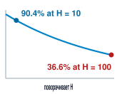
В модели независимых шагов без восстановления непроверенная успешность экспоненциально падает с ростом горизонта.
Инженерный расчёт 1.1: Компаундирование горизонта
Задача: Каждый шаг агента-ремонтника верен с вероятностью 99 percent, независимо, и ни один шаг не проверяется до того, как следующий будет на нём построен. Какая доля задач успешна на горизонтах 10 и 100 шагов, и какая ошибка на шаг удержала бы больший горизонт при успешности 90 percent?
Математика: По Уравнение 1,
Системный вывод: Надёжность задачи задаёт произведение
Горизонт в Уравнение 1 принадлежит делегированной задаче, а задачи, делегируемые агентам, быстро удлинились. Kwa и др. (2025 г.) выражают эту длину в человеческих терминах. Они хронометрируют людей с соответствующей экспертизой на наборе программных и исследовательских задач, а затем сообщают 50-процентный временной горизонт каждой модели на момент выпуска: длину задачи, в экспертном времени, которую агент, построенный на модели, выполняет в половине попыток (Рисунок 5).
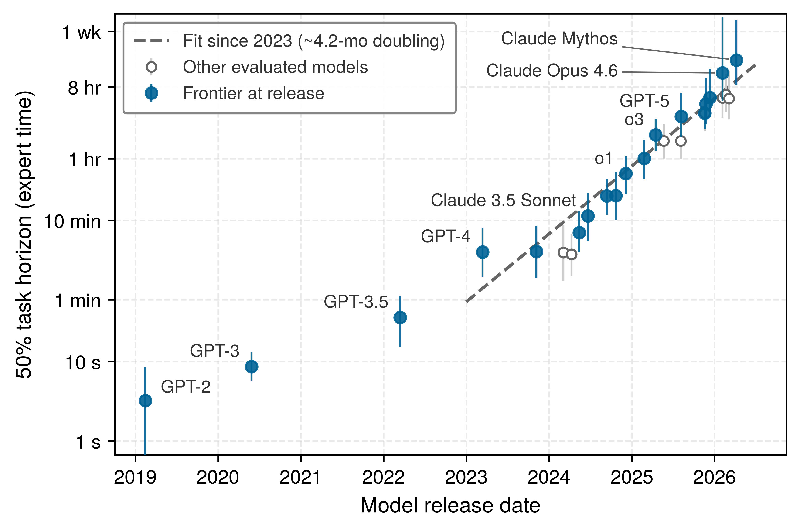
Среди фронтальных моделей на Рисунок 5 50-процентный горизонт вырос примерно с 3 секунд до примерно 17 часов — в 19,000 раз. Это удвоение каждые 6.2 месяцев за весь период и каждые 4.2 месяцев с 2023 года. Уравнение 1 превращает этот тренд в инженерную обязанность. Экспертное время измеряет масштаб задачи, а не конвертируется в шаги агента по фиксированному курсу, — те зависят ещё и от гранулярности инструментов и дизайна среды исполнения. Тем не менее задача, занимающая эксперта часами вместо минут, охватывает на порядок больше зависимых шагов, и при фиксированной ошибке на шаг удвоение непроверенного горизонта в шагах возводит вероятность успеха в квадрат. Каждое удвоение этого горизонта требует поэтому либо уменьшения ошибки на шаг вдвое, либо вставки проверок, вдвое укорачивающих непроверенный сегмент между ними. Первое даёт улучшение моделей; второе может дать только среда исполнения, а измеренный горизонт сам служит напоминанием, что половина попыток такой длины всё ещё терпит неудачу.
Проверка превращает молчаливый сбой в явную, отклонённую попытку, а отклонённая попытка всё равно расходует реальные ресурсы. Пусть каждая попытка выполнения задачи принимается с вероятностью
Промышленные среды исполнения ограничивают бюджет повторов, поэтому часть задач завершается без принятия, и их расходы всё равно должны быть отнесены на принятые задачи. Измеренная по когорте стоимость одной принятой задачи — это, следовательно, суммарный расход по всем инициированным задачам, делённый на число принятых; бухгалтерская ловушка из Глава 1.9 оценивает то, что скрывает исключение неудавшихся попыток. Даже в форме математического ожидания Уравнение 2 вскрывает компромисс между удельной ценой модели и вероятностью принятия, который расценивает для задачи ремонта расчёт (napkin math 1.2).
↪ Сквозная стоимость траектории и когортная стоимость одной принятой задачи, относящая неудавшиеся и прерванные попытки на счёт принятых, разрабатываются в Стоимость принятой задачи.
Инженерный расчёт 1.2: Дешевле токены или больше принятий
Задача: Попытка задачи ремонта расходует $1.30 на токены модели и $0.80 на песочницу, тесты и проверку, а принимается с вероятностью 40 percent. Что сильнее снижает стоимость одной принятой задачи: вдвое снизить цену токенов или поднять вероятность принятия до 60 percent за счёт улучшения контекста или инструментов?
Математика: Базовая попытка стоит $2.10, и задача требует в среднем 2.5 попыток, поэтому Уравнение 2 даёт
Системный вывод: Два рычага действуют на разные величины. Скидка на цену может снять не более той доли стоимости попытки, которую представляет удешевлённый компонент, тогда как вероятность принятия делит всю стоимость попытки (включая песочницу, тесты и проверку). Двукратное снижение цены токенов снимает половину доли токенов, составляющей 62 percent, что равноценно приросту вероятности принятия на 18 percentage points (с 40 percent до 58 percent). Здесь оба варианта дают близкие значения, и прирост вероятности принятия выигрывает лишь с небольшим отрывом. Любое улучшение контекста или доработка инструментов, поднимающие принятие выше этого порога, превосходят снижение цены, поскольку более высокая вероятность принятия амортизирует накладные расходы песочницы, настройку окружения и затраты на верификацию на меньшее число отброшенных запусков. Инженеры систем должны оценивать вмешательства по их чистому эффекту на
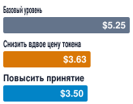
Принятие делит каждую статью расходов попытки, поэтому скромный его прирост может перевесить двукратное снижение цены токенов.
Уравнение 1 и Уравнение 2 образуют количественную основу системного проектирования на протяжении всей этой книги. Уравнение 1 показывает, насколько быстро падает надёжность на непроверяемых траекториях, а Уравнение 2 задаёт экономическую планку для любого механизма среды исполнения. Промежуточная проверка, граница песочницы или кэш промптов (который переиспользует уже вычисленное состояние обслуживания для повторяющегося префикса промпта, так что последующие вызовы пропускают его пересчёт) меняют оба члена этого отношения. Обозначив
Ни одно из двух уравнений не зависит от того, как выбираются решения управления. Они применимы и к детерминированным программам с фиксированным потоком управления, и к автономным циклам, где фундаментальные модели выбирают каждое следующее действие. Эта нейтральность делает их правильным инструментом для выбора между фиксированными рабочими процессами и циклами, управляемыми моделью.
1.6.1 Рабочие процессы против циклов, управляемых моделью
В задаче ремонта ПО позволить фундаментальной модели решать, как клонировать репозиторий, установить зависимости и запустить линтер — значит тратить токены и добавлять точки отказа в шаги, порядок которых никогда не меняется. Жёстко зашитый скрипт для диагностики неизвестной гонки состояний, напротив, ломается в тот момент, когда трассировка дедлока указывает на неожиданный файл. Первая группа шагов укладывается в фиксированный рабочий процесс, где последовательность операций задана заранее. Диагностика гонки состояний требует изучения исходных файлов, формирования гипотез и чтения логов, зависящих от того, что обнаружил предыдущий ход. Цикл, управляемый моделью — в котором модель выбирает следующий вызов инструмента по промежуточным наблюдениям — оправдывает себя на таких открытых ветвлениях всякий раз, когда его выигрыш в вероятности принятия перевешивает добавляемые вариативность и стоимость токенов.
Фиксированный рабочий процесс не сводится к линейному скрипту. Он может содержать условные ветвления, управлять повторами и запускать параллельные задачи, пока его граф управления зафиксирован заранее. Поскольку вызовы модели внутри рабочего процесса остаются стохастическими, фиксированный граф управления не гарантирует ни идентичных результатов, ни ограниченной задержки. Сравнивая фиксированный рабочий процесс с циклом, управляемым моделью, инженеры должны испытывать оба при одном и том же контракте задачи и проверках принятия. По Уравнение 2 цикл, управляемый моделью, окупает себя только тогда, когда его открытый поиск повышает
↪ Конверты экономической осуществимости для выбора между детерминированными рабочими процессами и циклами, управляемыми моделью, разрабатываются в Когда ограниченный цикл выигрывает у единичного вызова.
Политики авторизации остаются отделёнными от того, какая структура управления выбирает шаги. Фиксированный рабочий процесс может требовать одобрения человеком перед внешним побочным эффектом, точно так же, как диагностический цикл, управляемый моделью, может выполняться без подсказок внутри изолированной песочницы. Среда исполнения допускает исследовательские действия внутри безопасной границы, удерживая необратимые операции, такие как развёртывание в продакшене, до явной проверки одобрения. Одобренная выдача полномочий лишь разрешает выполнение действия; она не показывает, что итоговое состояние корректно, — для этого по-прежнему нужна независимая верификация.
Контрольная точка 1.1: Изменение границы задачи
Агент ремонта может изучать и редактировать одноразовую рабочую копию и вернуть патч на проверку. Его контракт не даёт доступа к сервису развёртывания.
Чтение границы
Оценка стоимости выбора
1.7 Анатомия траектории ремонта
До сих пор стохастическая карта компьютера, пространство экспозиции H·S·A, замыкание инвариантов и арифметика горизонта появлялись по одному инструменту за раз. Во время реального запуска ремонта гонки состояний (Глава 1.2) все четыре действуют на одну и ту же последовательность шагов одновременно. Каждая предлагаемая правка проверяет границу рабочей копии, расходует бюджет ходов и долларов и порождает вывод компилятора или тестов, который формирует следующее решение. Управление этим циклом требует, чтобы среда исполнения работала в двух масштабах: по траектории в целом, где состояние, права и стоимость накапливаются от хода к ходу, и внутри каждого отдельного хода, где предложение проверяется, исполняется и записывается до начала следующего вызова.
1.7.1 Почему среда исполнения управляет траекторией, а не отдельным вызовом
Исполнение начинается с того, что среда исполнения выделяет изолированную рабочую копию репозитория и передаёт исходное описание задачи. Модель предлагает запустить падающий тест. Проверив, что команда авторизована, среда исполнения вызывает тестовый раннер и записывает его вывод. Когда раннер сообщает о дедлоке, среда исполнения передаёт диагностический вывод следующему вызову модели. Модель предлагает изучить реализацию пула соединений, и возвращённый исходный код выявляет логику блокировок, требующую ремонта.
Руководствуясь этим исследованием, модель предлагает патч. Как установлено в Глава 1.3, этот патч — кандидат, а не сертифицированное вычисление. Перед изменением рабочей копии среда исполнения проверяет, что правка затрагивает разрешённые файлы. Эта проверка пути — механическое ограничение ниже уровня модели, и она удерживает правку
Когда следующая сборка сообщает о незакрытой скобке, это наблюдение направляет следующий ход. Модель предлагает исправленный патч, который среда исполнения применяет перед повторным запуском сборки. Компилятор сработал как промежуточная проверка в смысле расчёта горизонта (napkin math 1.1), поймав синтаксическую ошибку через один ход после её возникновения; исправленный патч и чистая пересборка не дают этой ошибке перейти в оставшиеся ходы. После того как компиляция прошла и видимые юнит-тесты успешны, среда исполнения собирает регрессионные свидетельства из запечатанного набора контракта, до которого инструментам редактирования не дотянуться, поднимая уровень замыкающих свидетельств над моделью с видимых тестов до запечатанных. Затем она записывает итоговый результат вместе с этими записями верификации. Если результаты удовлетворяют критериям завершения контракта, среда исполнения подаёт принятый ремонт; иначе она может продолжать итерации, остановиться со статусом неудачи или неопределённости либо эскалировать к инженеру-человеку.
То, что возвращают инструменты, формирует следующий ход. Дедлок потока требует другого исправления, чем синтаксическая ошибка, а чистая сборка никогда не доказывает исчезновение гонки состояний. Даже широкий регрессионный набор может пропустить расписание потоков, при котором баг проявляется под нагрузкой. Поэтому среде исполнения агента нужен и способ вплести новые свидетельства в следующий вызов, и ясное правило того, когда этих свидетельств достаточно для остановки. Сам цикл стар: обратная связь12 и обучение с подкреплением давно организуют действие вокруг наблюдений за средой (Wiener 1948 г.; Sutton и Barto 2018 г.), а ReAct показал фундаментальные модели, чередующие рассуждение, действия и наблюдения тем же образом (Yao и др. 2023 г.). Что добавляет среда исполнения — это ответственность за этот цикл, вот почему изоляция отказов, контроль доступа и восстановление остаются необходимыми, когда сгенерированное предложение может быть ошибочным или разрушительным.
Поскольку зависимости пересекают границы ходов, среда исполнения должна управлять всей траекторией целиком, а не изолированными вызовами. Исправленный патч зависит от ошибок компилятора, полученных несколькими ходами ранее, каждый ход расходует квоты задачи — токены, деньги и реальное время (latency), — и каждое действие должно проверяться на соответствие разрешениям задачи. Одиночный запрос к модели завершается сразу после окончания потока ответа, тогда как время жизни контекста, рабочего пространства и фоновых запусков инструментов задачи длится до тех пор, пока среда исполнения не завершит задачу. Даже сам промпт нарастает от хода к ходу. В записанном эпизоде восстановления репозитория из бенчмарка Глава 1.2 каждый ход дописывает команду модели и вывод оболочки в историю диалога, прежде чем снова вызывать модель (Рисунок 6).
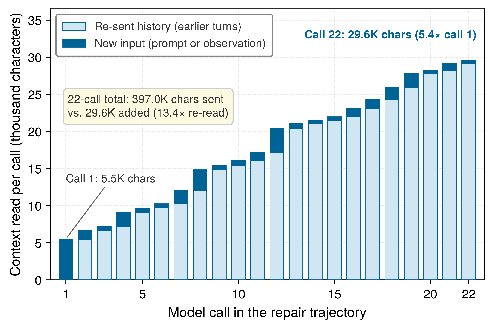
django__django-12050), с разбиением на повторно отправленную историю предыдущих ходов и новый текст промпта или наблюдений инструментов, добавленный на данном ходу. Светлый нижний сегмент каждого столбца равен полной высоте предыдущего столбца, потому что нехранящее состояние интерфейс модели заново отправляет всю предыдущую транскрипцию на каждом ходу. Данные из Jimenez и др. (2024 г.) и Yang и др. (2024 г.).
За 22 вызовов модели этой траектории первый вызов читает 5,499 символов промпта задачи и системных инструкций, тогда как к вызову 22 контекст, прочитанный за один ход, вырос до 29,594 символов (5.4× от начального вызова). Поскольку каждый вызов заново отправляет накопленную транскрипцию предыдущих ходов, траектория передаёт 396,997 символов ввода за свои 22 вызовов, хотя лишь 29,594 уникальных символов попадает в транскрипцию (13.4× повторной передачи). Этот квадратичный рост суммарного ввода объясняет, почему многоходовое использование инструментов доминирует в объёме токенов шлюза (Рисунок 1) и почему сжатие контекста (Проектирование контекста) и повторное использование KV-кэша между ходами (Управление KV-кэшем) являются фундаментальными обязанностями среды исполнения.
Накопление контекста — лишь одно из допущений, которые нарушаются, когда сервис, построенный для изолированных запросов, обслуживает многоходовую траекторию (Таблица 3). Сервисы с состоянием могут уже предоставлять часть этих механизмов; сравнение называет инженерные обязанности, которые развёртываются в последующих главах, а не ограничения, встроенные в веб-сервисы.
| Concern | Isolated-request baseline | Trajectory requirement | Developed in |
|---|---|---|---|
| Стоимость | У каждого вызова ограниченная, независимая стоимость | Стоимость накапливается по ходам и включает неудачные попытки | Базовая модель, Экономика агентов |
| Память | Состояние отбрасывается при возврате ответа | Контекст, состояние обслуживания и рабочее пространство должны сохраняться между ходами | Проектирование контекста, Управление KV-кэшем |
| Полномочия | Учётные данные выдаются всему сервису | Каждое действие проверяется на соответствие полномочиям, ограниченным задачей | Вызов инструментов, Агентские песочницы |
| Восстановление | Неудачный запрос можно повторить | Повтор эффекта может задвоить его; восстановление может требовать компенсации | Долговременное исполнение, Восстановление после отказов |
| Свидетельства | Статус успеха завершает запрос | Статус успеха — лишь одно наблюдение; для принятия нужен независимый контроль | Оценка агентов |
| Размещение | Любая реплика может обслужить любой запрос | Последующие ходы выигрывают от доступа к сохранённому состоянию обслуживания и рабочему пространству задачи | Управление KV-кэшем |
Наивная реализация может записать это многоходовое взаимодействие в виде простого цикла while. В Список 1 прямая отправка разобранных команд и остановка, как только модель напечатает токен завершения, оставляют каждую из этих обязанностей неохваченной.
prompt = task_description
while True:
response = generate(prompt)
command = parse_command(response)
output = run_with_host_permissions(command)
prompt += format_observation(command, output)
if "TASK_COMPLETE" in response:
breakРассмотрим, что произойдёт, когда первый тест проваливается и модель ищет по файловой системе хоста имя целевой функции. Поскольку у цикла нет границы авторизации, поисковая команда выполняется с полными привилегиями процесса хоста, а не внутри копии репозитория. Что бы ни вывел поиск, оно дописывается прямо в промпт — без пагинации, усечения или фильтрации. Если команда выгрузит тысячи строк вывода, окно контекста переполнится или стоимость токенов вырастет на всех последующих ходах. Эти ошибки происходят не от использования цикла, а от отсутствия проверок авторизации и управления контекстом.
Тот же цикл позволяет и модели решать, когда задача выполнена. Если модель попадает в цикл, предлагая ход за ходом небольшие вариации неработающего патча, каждый вызов может укладываться в квоты токенов и таймауты отдельного запроса, пока цикл крутится вечно и сжигает бюджет, не исправляя баг. Хуже того: если процесс хоста падает после записи правки файла на диск, но до записи результата теста, транскрипция в памяти теряется, а изменённый файл остаётся на диске. Перезапуск с исходного промпта тогда работает с грязным, несогласованным рабочим деревом. Обработка долговечности, откатов и восстановления требует знания того, является ли рабочее пространство одноразовым и имеют ли действия внешние эффекты; неопосредованный цикл не отслеживает ни того, ни другого.
Эти проблемы — знакомые системные обязанности (контроль доступа, долговечность и учёт ресурсов), действующие на протяжении целой задачи. Короткому одноразовому скрипту хватает простых повторов, тогда как агент, изменяющий общую производственную инфраструктуру, нуждается в долговечных контрольных точках и компенсирующих действиях. В обоих случаях среде исполнения нужны явные компоненты для проверки прав, сохранения состояния, соблюдения бюджетов и проверки завершения. Вынесение этих обязанностей за пределы непроверенного вывода модели замыкает контур управления в рамках пятичастного контракта задачи из Глава 1.5.3 и диктует, как среда исполнения опосредует каждый отдельный ход — от сборки контекста до проверки контракта.
1.7.2 Шесть фаз хода
Рассмотрим ход, в котором агент восстановления репозитория предлагает изменить захват мьютекса в пуле соединений. Если бы среда исполнения передавала этот вывод прямо в оболочку, обрезанный ответ или путь к файлу вне области действия попали бы в рабочее пространство без проверки. Вместо этого каждый ход проходит шесть фаз, и только вторая принадлежит модели; остальные пять принадлежат среде исполнения и её инструментам:
- Сборка контекста: среда исполнения строит следующий контекст из контракта задачи, текущего состояния рабочего пространства и релевантных наблюдений. Она проверяет, что оставшиеся бюджеты токенов и денег позволяют ещё один вызов модели, сокращая или суммируя старые ходы, чтобы уложиться в окно, сохраняя при этом ясность истории правок рабочего пространства.
- Вызов модели: модель читает контекст и возвращает предложение действия вместе с метаданными вызова. Среда исполнения трактует обрезанные генерации, разрывы сети или некорректный вывод как неудачные вызовы, а не как команды к исполнению, удерживая ошибки обслуживания и сети вне слоя инструментов.
- Валидация и авторизация: среда исполнения проверяет предложенную операцию на соответствие схеме инструмента и полномочиям (capability grant) задачи. Для кодового патча она проверяет, что целевые файлы лежат внутри разрешённых путей репозитория и что формат патча корректен. Среда исполнения отклоняет неавторизованные операции до отправки или приостанавливает ход, если требуется подтверждение человеком.
- Исполнение инструмента: инструмент выполняет авторизованную операцию внутри изолированной среды с жёсткими таймаутами и лимитами ресурсов. Применение патча, например, изменяет файлы в рабочем пространстве песочницы до того, как исправление пройдёт проверку. Среда исполнения отслеживает запущенные инструменты асинхронно, а не считает отправку завершением.
- Наблюдение и свидетельства: среда исполнения фиксирует сырой вывод инструмента и форматирует его как свидетельство для последующих ходов. Ошибка компилятора даёт журналы ошибок; прошедшие тесты — коды выхода и результаты тестов. Журнал аудита среды исполнения записывает, что случилось с каждым предложением. Отклонённое предложение не затрагивает внешнее состояние, тогда как сетевой вызов, чей ответ потерян, оставляет исход неизвестным: удалённый сервис мог применить изменение до разрыва соединения. Поэтому среда исполнения помечает прерванные по таймауту или усечённые запуски как неопределённые, а не считает молчание успехом.
- Проверка по контракту: среда исполнения сверяет обновлённое состояние задачи с критериями завершения контракта. В зависимости от результата она может начать следующий ход, ожидать фоновые задания, запросить у пользователя разъяснение, принять результат или остановить траекторию как неудавшуюся, неопределённую или эскалированную. Это решение опирается на внешние свидетельства и оставшиеся бюджеты, а не на собственный отчёт модели.
Эти шесть фаз обозначают границы ответственности, а не жёсткий синхронный график. В производстве авторизованные инструменты могут работать асинхронно с удалёнными сервисами, а вызов модели может предложить финальный ответ вместо вызова инструмента. Реализации могут перекрывать независимую работу, но причинность фиксирует порядок решений. Среда исполнения не может авторизовать действие по наблюдениям, поступившим после отправки, и не может по самому предложению судить, успех ли внешнего эффекта. Рисунок 7 изображает фазы в форме буквы U, где с валидации к инструменту спускается только авторизованный запрос. Пунктирные пути несут исключения. Отклонённый запрос возвращается в историю наблюдений как обратная связь об ошибке, не касаясь никакого инструмента; подтверждения и фоновые задания приостанавливают ход; а оценка в конце хода либо начинает следующий ход, либо принимает результат, либо останавливает траекторию без принятия.
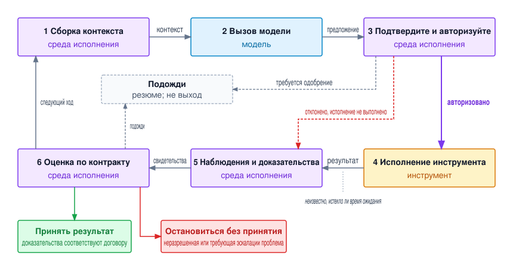
Жизненный цикл также даёт каждому свидетельству собственную запись, что не позволяет ограниченным утверждениям из Глава 1.5.1 слиться в одно. Фаза 4 записывает, что патч изменил файл. Фаза 5 записывает, что компиляция прошла успешно или что названный тест прошёл на проверенных ею расписаниях. Только фаза 6 спрашивает, удовлетворяют ли эти записи в совокупности критериям завершения контракта. Среда исполнения, записывающая один недифференцированный поток, не смогла бы отличить промежуточное исполнение от верифицированного разрешения.
Независимо от того, работают ли эти компоненты внутри одного локального процесса или распределены по сервисам кластера, ключевое правило остаётся неизменным: полномочия отделены от генерации. Права доступа исходят из гранта среды исполнения, критерии завершения — из контракта задачи, а записи о выполнении — из наблюдений инструментов, но никогда из текста модели, непроверенных ответов инструментов или собственных токенов завершения агента.
На практике запуск набора тестов (фаза 4) часто занимает гораздо больше времени, чем генерация вызвавшего его патча (фаза 2). Всё это время задача остаётся активной, хотя инференс модели простаивает. Среда исполнения должна сохранять достаточно контекста, чтобы обработать результаты тестов, когда они вернутся. Однако удержание обслуживающего состояния в высокоскоростной памяти ускорителя на протяжении долгого ожидания инструмента расходует дефицитный ресурс, а слишком раннее вытеснение KV-кэша вынуждает дорогостоящую пересчётку на следующем ходу. Поэтому разделение времени жизни задачи и времени жизни её обслуживающей памяти — центральная системная проблема. Простаивающая память ускорителя во время медленных внешних операций — это проблема ожидания инструмента (tool-wait problem); в Политики для приостановленного состояния оцениваются компромиссы между удержанием, выгрузкой и вытеснением этого состояния.
То же различие относится и к истории контекста. Хранение полных диагностических журналов в долговременном хранилище для последующих аудитов не означает повторную отправку каждого предупреждения компилятора в каждом промпте. Задержка инференса, память ускорителя, длительность инструментов и денежная стоимость тянут в разные стороны, когда среда исполнения решает, что сохранять, пересчитывать или суммировать. Явное назначение каждой записи данных владельца и времени жизни позволяет среде исполнения управлять кэшами и контекстом осознанно, и то же разделение ответственности организует всю остальную книгу.
1.8 Структура книги
Улучшение предложений модели не даёт ей права выполнять команду оболочки, а помещение вызова инструмента в песочницу не остановит траекторию из пятидесяти ходов от ухода с курса или потери состояния при сбое. Поскольку ни один слой карты стохастического компьютера (Рисунок 3) не может выполнить работу другого слоя, части этой книги следуют этим слоям в порядке зависимостей. Каждая часть опирается на гарантии, лежащие под ней, и закрывает одну из уязвимостей, прежде чем блоки соберутся в законченную среду исполнения.
1.8.1 Причинный порядок частей
Этот порядок зависимостей начинается с одиночного вызова модели, поскольку каждая последующая гарантия зависит от того, что читает, возвращает и во что обходится одно обращение. Как только среда исполнения связывает вызовы между ходами, она должна сначала ограничить растущее состояние в контексте и памяти, затем заключить в рамки полномочия вызовов инструментов и наконец наблюдать за горизонтом многих ходов — при сбоях, повторах и оценке. И лишь после того, как среда исполнения создаёт проверенные записи о том, что произошло, инженерная команда может обучаться на этих траекториях или масштабироваться на нескольких агентов. Таблица 4 сопоставляет эту цепочку зависимостей с семью частями книги.
| Часть | Управляющая проблема | Новая возможность | Закрываемая уязвимость |
|---|---|---|---|
| Часть I: Модель | Ошибочное предложение модели расходует время и ресурсы. | Интерпретировать контракт вызова и решать, когда дополнительный инференс оправдан. | Origin, затем horizon в рамках одного решения |
| Часть II: Память агента | Растущие истории конкурируют за ограниченный контекст и могут содержать устаревшие сведения. | Управлять контекстом следующего вызова, его обслуживающим состоянием и сведениями, сохраняемыми между задачами. | Состояние (State) |
| Часть III: Использование инструментов | Предлагаемым действиям нужны полномочия, изоляция и защита от недоверенного ввода. | Определять взаимодействия инструментов, ограничивать выполнение и пресекать злоупотребление легитимным доступом. | Полномочия (Authority) |
| Часть IV: Среда исполнения агента | Последовательность разрешённых действий всё равно может застопориться, потерять состояние или не выполнить задачу. | Наблюдать за выполнением, переживать прерывания, восстанавливаться после сбоев, оценивать и выпускать. | Горизонт (Horizon) |
| Часть V: Обучение на траекториях | Записи о выполнении сами по себе не являются пригодными данными для обучения. | Отбирать траектории, обучать продемонстрированному поведению и улучшать политики по наградам за результат. | Нет; меняет модель, а не уязвимость |
| Часть VI: Агенты в масштабе | Делегирование и конкурентность вносят издержки координации и лимиты общих ресурсов. | Сравнивать многоагентные архитектуры и выделять ресурсы на каждую принятую задачу. | Все три, помноженные |
| Часть VII: Синтез | Гарантии отдельных компонентов оставляют обязательства на их интерфейсах. | Провести задачу устранения инцидента через систему и обосновать её приёмку. | Все три, вместе |
Внутри частей главы следуют тому же причинному порядку. В части I Базовая модель фиксирует контракт вокруг одиночного вызова модели (что предоставляет запрос, как ответ сообщает о завершении и во что обходится ввод и вывод). Вычисления во время инференса решает, когда ещё один токен, кандидат, проверка или вызов стоит своей цены. Часть II посвящена состоянию. Проектирование контекста отбирает рабочий набор, который получает каждый вызов. Управление KV-кэшем оценивает состояние внимания, которое контекст оставляет в памяти ускорителя, и решает, сохранять ли его, перемещать или выбрасывать, пока агент ждёт инструмент. Долговременная память хранит знания между сессиями в виде утверждений, несущих своё происхождение.
Часть III посвящена полномочиям. Вызов инструментов ставит среду исполнения между предложенным вызовом и его эффектом; Агентские песочницы обеспечивает лимиты задачи под исполняемым кодом; а Безопасность агентов защищается от ввода, который разворачивает легитимные полномочия на цели злоумышленника.
Часть IV строит среду исполнения, которая управляет горизонтом. Каркас агента удерживает решение о продолжении вне модели, ведя цикл в рамках бюджетов и проверок подтверждения. Долговременное исполнение записывает каждое задуманное действие до его отправки, чтобы преемник мог возобновить работу после сбоя, не повторяя эффект небезопасно. Поскольку восстановление снапшота не отменяет эффект во внешней системе, Восстановление после отказов выбирает между повтором, починкой, компенсацией и эскалацией по оставшейся стоимости и останавливает траектории, не продвигающиеся вперёд. Оценка агентов устанавливает, какие доказательства поддерживают утверждение о конфигурации, а Эксплуатация агентов проносит эти доказательства в живую работу через трассировки, посмертные разборы и поэтапные релизы.
Часть V меняет модель, не расширяя её уязвимости. Курирование траекторий решает, принадлежит ли вообще отказ весам модели и какие записи служат какому ученику. Дообучение на траекториях обучается на ответах, отобранных при курировании, и выпускает обновление лишь тогда, когда улучшается приёмка в замкнутом контуре. Обучение с подкреплением на основе верифицируемых наград заменяет демонстрации программной проверкой и защищает эту проверку от оптимизатора, ищущего в ней лазейки. Часть VI рассматривает, как масштаб умножает все три уязвимости. Мультиагентная координация спрашивает, когда разбиение задачи между исполнителями выигрывает у единственного контроллера с теми же инструментами и бюджетом, а Экономика агентов измеряет стоимость на принятую задачу по когорте и оценивает каждый рычаг, которым управляет среда исполнения, относительно неё. Наконец, Заключение проводит одно устранение инцидента — откат конфигурации, подтверждение которого так и не пришло, — через каждую границу, построенную в книге.
Каждая часть открывается системными принципами, которые она развивает. Каждый принцип формулируется формально при первом появлении и цитируется везде, где последующие компоненты полагаются на его гарантии, начиная с принципа замыкания инвариантов (1).
↪ Полная таблица основополагающих системных принципов, с ключевой формулировкой каждого принципа и тем, что он предсказывает, развивается в Принципы книги.
Тот же порядок частей задаёт и практический порядок исправления продакшен-сбоев, поскольку части идут от изменений в том, что читает модель, к изменениям её весов. Изменить то, что модель видит в своём контексте, — дёшево, быстро и легко откатывается. Переобучение или дообучение весов модели — самое дорогое и наименее обратимое исправление, к тому же оно рискует ухудшить производительность на задачах, которых отказ не касался. Исправления ограничений схем, интерфейсов инструментов и проверок среды исполнения лежат между этими полюсами, упорядоченные по стоимости и обратимости. Эта последовательность — разумная настройка по умолчанию, а не жёсткая лестница, которую каждый инцидент обязан пройти ступень за ступенью.
↪ Лестница вмешательств, упорядочивающая средства от сборки контекста через схемы инструментов и механизмы среды исполнения до дообучения и обучения с подкреплением — по стоимости и обратимости, — развивается в Лестница вмешательств.
Порядок зависимостей объясняет и то, почему в этой книге оценка идёт раньше обучения на записанных траекториях. Траектория может содержать разрешённое и корректно выполненное действие, не продвинувшее задачу; и наоборот, принятый запуск часто содержит более раннюю неудачную попытку, показавшую агенту, как восстановиться. Методы, обучающиеся на этих записях, нуждаются в этих различениях, которые поставляет оценка, чтобы обучаться на настоящем восстановлении, а не на хрупкой удаче. По той же причине многоагентная координация появляется лишь после завершённой одноагентной среды исполнения: командам следует сравнивать издержки координации, задержку и разброс нескольких агентов с хорошо спроектированным одноагентным базлайнером, а не с хрупким while-циклом.
Эта последовательность — порядок преподавания, а не предписание развёртывать каждый механизм на каждой рабочей нагрузке. Продакшен-системе нужны лишь те предохранители, которых требуют её уязвимости, а ограниченному запросу «только чтение» нужно куда меньше механизмов, чем агенту, уполномоченному изменять живые кластеры баз данных. Заключение применяет полный фреймворк к агенту устранения инцидентов (маяк 1.3), от автоматического оповещения о задержке через подтверждённый оператором откат конфигурации до проверенного восстановления.
1.8.2 Пути чтения по ролям
Инфраструктурный инженер, планирующий пулы KV-кэша, платформенный инженер, пишущий схемы инструментов, и исследователь пост-обучения, курирующий траектории, касаются разных частей стека агента, но отказ в одном слое регулярно проявляется как симптом в другом. Чтобы эти межслойные зависимости оставались ясными и не требовали от каждого читателя заранее знать микроархитектуру ускорителей, основная последовательность предполагает знакомство с промптингом фундаментальных моделей, авторегрессионной генерацией токенов, системным программированием, процессами, виртуальной памятью, файловыми системами, сетями, удалённым вызовом процедур и базовой теорией вероятностей. Помимо этих основ, книга самодостаточна. Специфичные для агентов понятия определяются при первом появлении, а в приложениях содержатся выводы стоимости обслуживания и математические выкладки.
↪ Выводы стоимости обслуживания вызовов модели развиваются в Основы стоимости инференса.
Читатели с конкретной ролью могут сместить акценты, сохраняя порядок зависимостей. Инфраструктурные инженеры будут опираться на контракты обслуживания моделей, управление памятью KV-кэша, выполнение в песочнице, гарантии долговечности и экономику парка. Платформенные и прикладные инженеры сосредоточатся на инженерии контекста, интерфейсах инструментов, изоляции безопасности, каркасе агента, восстановлении после сбоев и бенчмарках оценки. Исследователи пост-обучения сконцентрируются на вычислениях во время инференса, курировании траекторий, дообучении и обучении с подкреплением по проверяемым наградам. Каждый путь начинается с контракта задачи и пространства уязвимостей H·S·A этой главы и завершается сквозной траекторией в заключении.
1.8.3 Три вопроса книги
Без общей метрики стоимости команды добавляют автономные циклы там, где выиграл бы фиксированный скрипт. Без модели уязвимостей они перегораживают песочницами задачи «только чтение» или недозащищают продакшен-базы данных. Без независимых проверок они принимают беглое сообщение о завершении за выполненную работу. Поэтому последующие главы отвечают на три вопроса:
- Когда цикл под управлением модели оправдывает свою стоимость по сравнению с фиксированным рабочим процессом? Этот компромисс решает стоимость на принятую задачу. Главы развивают механизмы, которые либо повышают вероятность приёмки, либо сокращают траты на неудавшиеся попытки.
- Какие механизмы среды исполнения должны окружать модель? Размер задаёт пространство уязвимостей H·S·A. Части со II по IV строят механизмы, управляющие контекстом на всех уровнях памяти, ограничивающие делегированные полномочия против недоверенного ввода и наблюдающие за длинными горизонтами.
- Как операторы узнают, что автономная задача действительно выполнена? Ответом управляет замыкание инвариантов. Беглый самоотчёт модели не заменяет внешних проверок; приёмка опирается на доказательства, собранные независимо от среды и оценённые по контракту, принятому до начала работы.
↪ Ответы на три вопроса, проверенные с собранной полной архитектурой, развиваются в Ответы на три вопроса.
1.9 Заблуждения и подводные камни
Эти три вопроса задают рамку каждому механизму книги, а также обнажают типичные ловушки, возникающие, когда команды строят или измеряют агентов без них. Патч может компилироваться без ошибок и не устранять дефект, точно так же агент может израсходовать бюджет ходов, не произведя свежих доказательств. Автономное выполнение терпит неудачу, когда проектировщики систем принимают активность внутри цикла за настоящее завершение задачи.
Заблуждение: Большее окно контекста устраняет необходимость управлять состоянием задачи.
Расширение окна контекста увеличивает, сколько токенов может прочитать одиночный вызов, но не решает, какое состояние актуально. В траектории с добавлением в конец устаревшие наблюдения и неактуальные правки файлов накапливаются рядом с текущими версиями. Рассмотрим каркас программной починки при бюджете в 30 ходов. Начав с начального промпта в 8,000 токенов и добавляя по 1,500 токенов за ход, финальный вызов модели читает 51,500 токенов. Это лишь 40 percent окна в 128,000 токенов, так что вместимость буфера никогда не заставляет вытеснять состояние. Однако без активной обрезки состояния устаревшие ревизии правленных файлов лежат рядом с последними патчами. Повторная отправка предыдущих ходов заставляет систему прочитать 892,500 кумулятивных входных токенов — в 17.3× больше размера финального контекста. Даже когда вся история помещается в память, сырая ёмкость не гарантирует ни релевантности, ни свежести. Среда исполнения должна явно собирать рабочий контекст и помечать, какое состояние авторитетно, а не оставлять модели распутывать конфликтующие снапшоты.
↪ Квадратичная стоимость входных токенов при повторной отправке append-only истории развивается в Как многоходовая история наращивает стоимость входа.
Ловушка: Добавление каждой неудачи в контекст и повторные попытки, пока модель не сообщит о прогрессе.
Независимые повторные попытки могут повысить вероятность принятия, тогда как повторения одной и той же неудачи не дают никакого выигрыша. При вероятности принятия на одну попытку 40 percent бюджет повторов
Заблуждение: Связный отчёт модели устанавливает, что задача завершена.
Естественно-языковое утверждение модели о том, что она устранила проблему, — это неподтверждённая гипотеза, а не доказательство завершения. На уровнях доказательств закрытия из Глава 1.5.2 оно находится на самой нижней ступени, ниже даже проверки компилятором, поскольку неудачный, но правдоподобный запуск порождает столь же уверенный отчёт, как и корректный. Расчёт горизонта (прикидка «на салфетке» 1.1) показывает масштаб ошибки. При своих предположениях непроверенный ремонт длиной 100 шагов оказывается корректным лишь в 36.6 percent запусков. Если каждый запуск завершается уверенным сообщением о завершении, среда исполнения, доверяющая этому сообщению, принимает все из них, и большинство таких принятий ошибочно. Вместо этого среда исполнения должна проверять рабочее пространство по явному стандарту доказательств (запечатанные тесты, статический анализ и стресс-прогоны, которые требует исправление проблем конкурентности) и фиксировать как артефакты верификации, так и оставшиеся пробелы.
Ловушка: Выражение ограничения полномочий только в виде инструкции модели.
Указание агенту в промпте изменять файлы только внутри каталога проекта выражает намерение, но не защищает ни от ошибок модели, ни от промпт-инъекций, скрытых в недоверенных исходных файлах. Если среда хоста предоставляет низкоуровневые примитивы исполнения, агента можно направить на утечку секретов или изменение инфраструктуры. Доступ к файлам только на чтение сам по себе тоже не является безопасным. Агент, прочитавший API-секрет из переменной окружения и отправивший его в исходящем сетевом запросе, утекает данные, не затронув ни одного локального файла. Границы исполнения, а не промпт, должны принуждать к соблюдению прав доступа. Среды исполнения изолируют процессы агента примитивами операционной системы (контейнерами, изолированными сетевыми пространствами имён, краткосрочными учётными данными и ограниченными интерфейсами инструментов), которые блокируют несанкционированные действия независимо от того, что попросила выполнить модель.
Заблуждение: Вариативность среды всегда требует цикла, управляемого моделью.
Обращение к фундаментальной модели для выбора следующего шага после предсказуемого провала модульного теста — пустая трата времени и токенов, когда исправление — известный запасной вариант или фиксированная последовательность повторов. Традиционные программные рабочие процессы обрабатывают большинство рутинных вариаций детерминированным потоком управления: ветвлениями, параметризованными повторами, автоматами состояний и экспоненциальными задержками. Решения, принимаемые моделью, оправдывают себя только тогда, когда выбор следующего действия требует интерпретации открытых свидетельств, которые фиксированные правила не могут разобрать, — например, объединения диагностик компилятора и тестов для правки нескольких файлов. Инженерам следует сравнивать агентные циклы с детерминированными рабочими процессами по одним и тем же критериям принятия: цикл оправдывает свою задержку, расход токенов и вариативность, лишь когда снижает стоимость одной принятой задачи.
Ловушка: Отнесение к принятому результату только успешной финальной траектории.
Автономное завершение задачи часто требует нескольких попыток, прежде чем патч-кандидат пройдёт проверки принятия. Каждая оставленная ветка, неудачный прогон тестов и отброшенная попытка расходуют вычисления и реальное время, даже если её код так и не попадает в финальный репозиторий. При вероятности принятия на одну попытку 40 percent учёт только выигравшей траектории даёт кажущуюся стоимость $2.10 за ремонт, тогда как истинная ожидаемая стоимость составляет $5.25 — занижение в 2.5× раза. Полный учёт системы должен также охватывать подготовку песочницы, накладные расходы на вызов инструментов и стоимость человеческой сортировки. При измерении по когорте в числителе учитывается каждая инициированная задача — принятая или нет, — а в знаменателе только задачи, принятые по заявленному стандарту доказательств. Эта когортная форма, измеримый аналог Уравнение 2, развивается в Стоимость принятой задачи.
Каждая из этих ловушек возникает из-за принятия свойства отдельного вызова модели за гарантию на протяжении всей задачи. Работающая среда исполнения поддерживает состояние актуальным, принуждает к соблюдению прав на уровне исполнения, а не промпта, и требует независимых доказательств перед принятием, оценивая систему по стоимости её проверенных результатов, а не по гладкости её реплик.
1.10 Итоги
Фундаментальная модель порождает кандидатные цепочки рассуждений и действия, однако не способна проверить собственный вывод или безопасно изменить внешние системы. Четыре инструмента определяют устройство окружающей её среды исполнения. Карта «стохастического компьютера» сопоставляет агента с классическим компьютером и указывает, где аналогия ломается: поскольку модель лишь предлагает, детерминированная среда исполнения должна управлять персистентным состоянием, принуждать к соблюдению прав доступа и замыкать контур. Пространство экспозиции H·S·A измеряет эту среду исполнения по трём измерениям: горизонт исполнения (
Четвёртый инструмент — арифметика надёжности и стоимости горизонта — оценивает эти решения двумя соотношениями. В модели независимых шагов без восстановления непроверенные многошаговые прогоны экспоненциально накапливают ошибки шагов, поэтому раннее обнаружение и исправление ошибок сокращает эффективный горизонт, на котором накапливаются ошибки. Измерение производительности через «стоимость принятой задачи» относит каждый потраченный впустую вызов модели, прогон в песочнице и человеческую проверку при неудачных попытках к проверенным результатам, которые проходят. Как показывает разбор ремонта репозитория и четыре «маячных» системы, механизмы среды исполнения должны масштабироваться вместе с экспозицией: агенту нужны лишь те средства защиты, которых требуют его горизонт, состояние и полномочия.
Таблица 5 суммирует количественные соотношения, используемые в этой главе для оценки надёжности и стоимости на горизонте исполнения, где
| Уравнение | Что ограничивает или решает | Где выведено |
|---|---|---|
| Вероятность успеха задачи, когда все |
Уравнение 1 | |
| В модели независимых шагов без восстановления при малой частоте ошибок на шаг надёжность определяется произведением |
Глава 1.6 | |
| Ожидаемая стоимость принятой задачи при независимых повторах; частота принятия масштабирует эффективную стоимость попытки | Уравнение 2 | |
| Экономическое условие того, оправдывает ли добавленная проверка, граница, кэш или оптимизация промпта свою стоимость | Глава 1.6 | |
| Кумулятивная вероятность принятия при бюджете в |
Глава 1.9 |
Основные выводы: Автономность — свойство системы, а не модели
- Стохастические предложения нуждаются в замыкающей среде исполнения: Агент похож на классический компьютер, но его фундаментальная модель лишь предлагает. Она порождает кандидатные токены и действия, оставляя проверку корректности и реальное исполнение внешнему программному обеспечению. Окружающая среда исполнения должна принуждать к соблюдению прав доступа, сохранять состояние между шагами и управлять всей траекторией через неудачи и повторы.
- Экспозиция задачи диктует архитектурные обязательства: Размерности H·S·A (длина горизонта, накопленное состояние и делегированные полномочия) указывают, где автономный рабочий процесс требует защитных песочниц, надёжных контрольных точек, вмешательства человека и проверяемых доказательств. Системные механизмы должны масштабироваться в соответствии с профилем экспозиции; задачи с коротким горизонтом и ограниченными полномочиями не требуют тяжёлых контуров управления высокоэкспонированных систем.
- Принуждение в среде исполнения и эмпирические доказательства играют разные роли: Структурные границы налагают жёсткие ограничения на разрешённые действия, предотвращая катастрофические побочные эффекты независимо от поведения модели. Напротив, проверки верификации дают эмпирические доказательства лишь для тех конкретных свойств, которые измеряют. Принятие задачи требует сопоставления этих доказательств с определённым контрактом. Пройденные тесты подтверждают утверждения только в пределах измеренного покрытия; сам по себе красноречивый отчёт никаких независимых доказательств не даёт.
- Два числа оценивают каждый механизм, включая автономность: В модели независимых шагов без восстановления успех непроверенной задачи экспоненциально убывает с ростом горизонта, поэтому обнаружение и исправление ошибок до того, как последующие шаги начнут на них опираться, может повысить надёжность без изменения модели. Тем временем стоимость принятой задачи распределяет все потраченные впустую инференс, вычислительную инфраструктуру и человеческий контроль по проверенным результатам. Автономный цикл оправдывает свою эксплуатационную сложность лишь тогда, когда снижает эту чистую стоимость в рамках контракта задачи.
1.11 Историческая перспектива и дополнительная литература
Замкнутая архитектура, лежащая в основе агентных систем, опередила современное машинное обучение на десятилетия. В основанной им кибернетике Норберт Винер утвердил обратную связь как организующий принцип управления: система наблюдает за средой, измеряет расхождение между текущим состоянием и целевой целью и применяет корректирующие действия (Wiener 1948 г.). Спустя десятилетие Винер предупредил об операционной опасности, присущей быстрой обратной связи, утверждая, что когда автоматическая машина действует быстрее, чем оператор-человек может вмешаться, она должна быть ограничена точно тем назначением, для которого предназначена (Wiener 1960 г.). Искусственный интеллект воспринял эту структуру через фреймворк рационального агента, определяя агента через его непрерывный цикл восприятия и взаимодействия со средой (Russell и Norvig 2020 г.). Обучение с подкреплением впоследствии формализовало этот цикл, сделав итеративную траекторию состояний, действий, вознаграждений и наблюдений центральным объектом обучения (Sutton и Barto 2018 г.).
С приходом фундаментальных моделей изменился потенциал компонента, приводящего контур в движение. Вместо опоры на специализированные эвристики или вручную составленные политики универсальная модель, претренированная на разнообразных распределениях данных, теперь способна синтезировать цепочки рассуждений и порождать конкретные действия в виде текста и кода (Bommasani и др. 2021 г.). Архитектура ReAct показала, что чередование порождаемых моделью рассуждений с обратной связью от исполнения инструментов позволяет языковым моделям эффективно работать в открытых программных средах (Yao и др. 2023 г.). Реальные бенчмарки программной инженерии закрепили этот сдвиг, продемонстрировав, что способность агента должна измеряться не гладкостью ответов на статические промпты, а тем, проходят ли предложенные им патчи тестовые наборы невиданных репозиториев (Jimenez и др. 2024 г.).
Обвязка вокруг модели опирается на классические исследования систем, посвящённые ненадёжным компонентам. Джон фон Нейман первым исследовал, как синтезировать надёжные вычислительные системы из подверженных отказам частей, показав, что модульная избыточность, голосование большинством и периодическое восстановление состояния позволяют ограничить накопленный уровень отказов (Neumann 1956 г.). Последующие исследования распределённых систем формализовали допущения об отказах, которые должны учитывать супервизоры: от моделей fail-stop, где повреждённые компоненты останавливаются обнаруживаемым образом (Schlichting и Schneider 1983 г.), до византийских моделей отказов, где компоненты ведут себя произвольно или обманчиво (Lamport и др. 1982 г.). Современная таксономия надёжности кодифицировала причинную последовательность, связывающую латентные дефекты, ошибки во время исполнения и наблюдаемые отказы системы, различая ошибки, вызывающие явные тревоги, и ошибки, тихо искажающие дальнейшее исполнение (Avizienis и др. 2004 г.).
Поскольку фундаментальные модели порождают вероятностные выходы, верификацию нельзя переложить на сам генератор. Аргумент «от начала до конца» в проектировании систем установил, что полные проверки корректности нельзя делегировать промежуточным подкомпонентам: они в конечном счёте должны находиться в конечной точке, понимающей требования прикладной задачи (Saltzer и др. 1984 г.). В то же время основополагающее наблюдение Дейкстры о том, что тестирование программного обеспечения демонстрирует наличие ошибок, а не их отсутствие, ограничивает уверенность, которую может дать любой набор верификации (Dijkstra 1970 г.).
Безопасное управление делегированием и полномочиями опирается на принципы, выработанные в операционных системах и проектировании распределённых транзакций. Адресация на основе возможностей, введённая Деннисом и Ван Хорном, связала права доступа напрямую с неподделываемыми мелкозернистыми ссылками на объекты, а не с окружающими идентификаторами процессов (Dennis и Van Horn 1966 г.). Зальцер и Шрёдер кодифицировали эти паттерны в незыблемые принципы защиты компьютеров, подчеркнув минимальные привилегии, полное посредничество при запросах доступа и экономность механизмов (Saltzer и Schroeder 1975 г.). Харди позже выявил опасность окружающих полномочий, показав, что при атаке «confused deputy» непривилегированный клиент заставляет привилегированную утилиту злоупотребить разрешениями, предоставленными ей окружением, а не конкретным вызывающим (Hardy 1988 г.).
Расширенное автономное исполнение также сталкивается с реальностью того, что многошаговые внешние рабочие процессы нельзя атомарно откатить. Гарсиа-Молина и Салем разработали саги для управления длительными транзакциями, координируя продвижение вперёд через заранее определённые компенсирующие действия, когда операции завершаются неудачей посреди пути (Garcia-Molina и Salem 1987 г.). На границах интерфейсов контрактное проектирование Мейера установило, что надёжность модульного ПО зависит от явных исполняемых предусловий, постусловий и инвариантов (Meyer 1992 г.).
Автономные агенты заново открывают все эти классические проблемы безопасности и надёжности одновременно. Поскольку языковые модели перемешивают интерпретацию данных с потоком управления, внешние данные нельзя считать доброкачественными. Greshake и др. (2023 г.) показал, что непрямая промпт-инъекция превращает недоверенный внешний контент в инструкции, которым модель может следовать. Этот результат показывает, что для агента, управляемого естественным языком, сам доступ на чтение является экспозицией: то, что читает агент, может направлять каждое предлагаемое им действие, хотя выдача этих действий остаётся прерогативой только среды исполнения.
- The Protection of Information in Computer Systems (Saltzer и Schroeder 1975 г.). Классическая формулировка механизмов защиты компьютерных систем, включая минимальные привилегии, полное посредничество и отказобезопасные значения по умолчанию. Эта статья даёт концептуальный фундамент современной авторизации инструментов, песочниц и границ привилегий в агентных архитектурах.
- End-to-End Arguments in System Design (Saltzer и др. 1984 г.). Основополагающее обоснование размещения проверок в прикладных конечных точках, сохраняющих семантику задачи. В инженерии агентов оно проясняет, почему гладкость промежуточной генерации не может удостоверить сквозное завершение задачи.
- Basic Concepts and Taxonomy of Dependable and Secure Computing (Avizienis и др. 2004 г.). Стандартная таксономия, различающая дефекты, ошибки и отказы в вычислительных системах. Она даёт дисциплинированный словарь, необходимый для диагностики режимов отказа агентов, включая характерные для фундаментальных моделей fail-plausible ошибки.
- Principles of Computer System Design (Saltzer и Kaashoek 2009 г.). Обстоятельный учебник по декомпозиции систем, атомарности, виртуализации и защите. Он даёт системный фундамент для построения устойчивых агентных оркестраторов, сред исполнения и обвязки инструментов.
- Reinforcement Learning: An Introduction (Sutton и Barto 2018 г.). Канонический трактат о последовательном принятии решений в динамических средах. Он даёт формальный словарь состояний, действий, вознаграждений и траекторий среды, на котором строится модель исполнения в этой главе.
- ReAct: Synergizing Reasoning and Acting in Language Models (Yao и др. 2023 г.). Основополагающая статья, показавшая, что чередование цепочек рассуждений с вызовами инструментов позволяет языковым моделям решать многошаговые задачи. Чтение её вместе с этой главой высвечивает границу между предлагаемыми моделью действиями и внешней системой, ответственной за их исполнение и проверку.
1.12 Упражнения
Все величины ниже — гипотетические учебные данные, подобранные для круглых чисел; они не описывают какую-либо конкретную модель, провайдера или развёртывание. Если в задаче не сказано иное, считайте, что ошибки на отдельных шагах независимы, каждая попытка стоит одинаково в ожидании, а «принято» означает «принято» в рамках фиксированного контракта задачи.
1. Как далеко может зайти непроверяемый ремонт? (Базовый). Ремонтный агент делает шаги, каждый из которых верен с вероятностью 0.98, и ни один шаг не проверяется, прежде чем следующий строится на нём.
- Используя Уравнение 1, вычислите вероятность успеха задачи на горизонтах 20 и 60 шагов (turns).
- Найдите долю ошибок на шаг, при которой 60-шаговая задача удерживается на 80 процентах успеха, и во сколько раз эта доля ниже текущей. Подтвердите ответ формой с малым
: . - Вместо более сильной модели среда исполнения вставляет проверку после каждых 10 шагов: она обнаруживает любой неверный шаг в этом сегменте и перезапускает сегмент с предыдущей контрольной точки (checkpoint). Считая проверку идеальной и бесплатной, вычислите ожидаемое число шагов до завершения 60-шаговой задачи и сравните его с перезапуском всей непроверенной траектории до успеха. Укажите, какой рычаг стоит дёрнуть первым и от какого свойства проверки зависит ответ.
2. Скидка на токены или лучший контекст? (Базовый). Попытка ремонтной задачи тратит $1.80 на токены модели и $1.20 на песочницу, тесты и проверку; 25 процентов попыток принимается. Среда исполнения повторяет попытки до принятия.
- Вычислите ожидаемое число попыток и стоимость одной принятой задачи по Уравнение 2.
- Провайдер предлагает скидку 40 процентов на токены; альтернативно изменение контекста поднимает принятие до 30 процентов при исходной стоимости попытки. Вычислите стоимость одной принятой задачи в каждом случае и при обоих изменениях вместе.
- Найдите вероятность принятия, эквивалентную скидке. Объясните, почему результат сравнения отличается от расчёта стоимости в главе (прикидка 1.2), назвав величину, которая решает, какой рычаг выигрывает.
3. Размещение рабочей нагрузки в H·S·A (Базовый). Агент сортировки журналов выполняет около 15 шагов на инцидент и тратит $0.50 на токены за задачу. Рассмотрим три версии его полномочий (grant): (i) он читает экспортированный снимок журнала внутри своей изолированной рабочей директории и записывает туда файл с резюме; (ii) он также заводит заявки в общем трекере, причём любую заявку можно закрыть обратно; (iii) он также откатывает развёртывание в продакшене, и неверный откат вызывает сбой стоимостью $2,000, который нельзя отменить. В версии (iii) каждая задача по инциденту предлагает один откат, и 2 процента предложенных откатов неверны.
- Разместите каждую версию на осях состояния и полномочий таксономии Рисунок 4, обосновывая каждый уровень последствием операции, а не её названием.
- Для версии (iii) вычислите ожидаемые потери за задачу от неверных откатов и выразите их кратной долей стоимости токенов.
- Шаг человеческого одобрения стоит $5 за предложенный откат, пропускает корректные откаты и останавливает 90 процентов неверных, прерывая автоматическое изменение без перезапуска агента. Вычислите ожидаемую стоимость за задачу с одобрением и укажите, какой уровень экспозиции ограничивает эту рабочую нагрузку.
- Задайте все пять полей контракта задачи для версии (iii): полезную цель сортировки инцидентов и её негативную область (negative scope), базовую линию развёртывания и среду исполнения, разрешённые действия и границу одобрения, ограниченные диагностические наблюдения и независимые критерии завершения. Назовите одно ограничение доказательств, которое потребовало бы неразрешённого исхода или дополнительной проверки.
4. Платим за проверки внутри горизонта (Средний). Ремонтная задача выполняется за 50 шагов с долей ошибок на шаг 0.02. Каждый шаг стоит $0.04 в токенах, и каждая попытка платит $1.00 за подготовку новой песочницы. При политике A результат проверяет только герметичный тест в конце: попытка принимается тогда и только тогда, когда все шаги были верны, а отклонённая попытка начинается с нуля. При политике B та же песочница сохраняется, и проверка стоимостью $0.10 запускается после каждых 10 шагов, обнаруживая любой неверный шаг в сегменте, который затем перезапускается с последней контрольной точки.
- Вычислите вероятность принятия и стоимость одной принятой задачи при политике A.
- Вычислите ожидаемую стоимость одной принятой задачи при политике B, а также ожидаемое число шагов при каждой политике.
- Найдите стоимость одной проверки, при которой политика B перестаёт окупаться. Затем раскритикуйте допущение, из-за которого B выглядит так сильно: что происходит с расчётом, если промежуточная проверка — это видимый тест, под который агент может подогнать свой патч? Задайте независимые финальные доказательства и покрытие конкурентности, подходящие для этого ремонта, используя Глава 1.5.2, и объясните, почему герметизация одного последовательного теста не установила бы, что состояние гонки исправлено.
5. Когда потери не в токенах (Средний; второй маяк). Агент устранения проблем (маяк 1.3) тратит $2 на токены за попытку. Каждая попытка завершается предложением одного изменения конфигурации, верного с вероятностью 0.95; неверное изменение, попавшее в прод, стоит в сумме $20,000. Шаг человеческого одобрения стоит $15 времени дежурного и задерживает восстановление на 6 минут, в течение которых продолжающийся инцидент стоит $50 в минуту. Одобрение пропускает каждое верное изменение и отклоняет 90 процентов неверных; отклонённое предложение начинает новую попытку, которая снова требует одобрения.
- Без одобрения каждое предложение попадает в прод. Вычислите ожидаемую стоимость за задачу, включая ожидаемые потери.
- С одобрением вычислите вероятность того, что попытка закончится коммитом, ожидаемое число попыток на задачу, ожидаемые траты на попытки, вероятность того, что закоммиченное изменение неверно, и полную ожидаемую стоимость за задачу.
- Найдите стоимость инцидента в минуту, выше которой одобрение перестаёт окупаться.
- Для ремонтного агента рычагами главы были принятие и горизонт. Покажите численно, почему снижение цены токенов вдвое здесь несущественно, и назовите сдерживающее ограничение этого маяка и уровень H·S·A, который его задаёт.
6. Конвейер (workflow), цикл (loop) или то и другое? (Средний). Попытка фиксированного конвейера (workflow) для запроса в поддержку стоит $0.60; попытка цикла, управляемого моделью, — $1.80. Половина запросов — рутинные: там конвейер принимается с вероятностью 0.55, а цикл — с 0.80. Вторая половина — новые запросы: там конвейер принимается с вероятностью 0.05, а цикл — с 0.70. Каждый запрос повторяет выбранную архитектуру до принятия.
- Вычислите стоимость одной принятой задачи для каждой архитектуры на каждом классе запросов, а также среднее по популяции, если все запросы идут через конвейер и если все — через цикл.
- Идеальный маршрутизатор отправляет рутинные запросы конвейеру, а новые — циклу. Вычислите среднюю стоимость одного принятого запроса.
- Реальный маршрутизатор стоит $0.05 за запрос и отправляет долю
каждого класса на неверную архитектуру. Вычислите среднюю стоимость при и найдите , при котором маршрутизация перестаёт выигрывать у одного только цикла. Что это говорит о том, куда направлять инженерные усилия, и что должно быть зафиксировано, чтобы сравнение было корректным?
7. Повторы, повторяющие одну ошибку (Продвинутый). Каждая попытка ремонтной задачи стоит $2.00, а бюджет повторов допускает 4 попытки. 70 процентов задач — лёгкие, принимаются с вероятностью 0.70 за попытку; остальные — сложные, и поскольку каждый повтор перечитывает транскрипт и повторяет ту же ошибочную гипотезу, сложная задача принимается с вероятностью лишь 0.05 за попытку. Считайте попытки независимыми при условии, что задача лёгкая или сложная; повторение гипотезы снижает долю принятия сложных задач, а не делает каждый повтор разделяющим один исход. Задачи останавливаются при принятии или завершаются неразрешёнными по лимиту бюджета, оставляя свои траты в числителе.
- Аналитик объединяет когорту в одну среднюю вероятность принятия и применяет формулы независимых повторов. Вычислите объединённое принятие, предсказанный успех в рамках бюджета и предсказанную стоимость одной принятой задачи.
- Вычислите фактическое принятие в рамках бюджета, ожидаемые траты на задачу и измеренную стоимость одной принятой задачи для смеси. Во сколько раз объединённая модель занизила стоимость?
- Переделайте повторы. Повторы со 2-го по 4-й начинаются с чистого контекста, несущего только результат проваленного теста; это стоит $2.50 за повтор и поднимает принятие сложной задачи при повторе до 0.25, не меняя лёгких. Вычислите новое принятие в рамках бюджета и стоимость одной принятой задачи и обоснуйте, стоит ли выпускать переделку в прод. Что этот результат говорит о трактовке
как свойства модели, а не всей попытки?
8. Должен ли ремонтный агент сам развёртывать свои патчи? (Продвинутый). Команда ежедневно выпускает 200 патчей, проходящих герметичные тесты. Из них 3 процента на самом деле неверны. Неверный патч, дошедший до продакшена, стоит $5,000. Команда предлагает разрешить агенту развёртывание напрямую. На столе две альтернативы. Рецензент стоимостью $25 за патч ловит 80 процентов неверных патчей, прошедших тесты, а ожидание рецензии задерживает каждый патч на 4 часа по цене $10 в час. Альтернативно канареечное развёртывание стоимостью $5 за патч показывает небольшую часть трафика и откатывается автоматически, ограничивая стоимость неверного патча суммой $500.
- Разместите предложение прямого развёртывания и дизайн с канарейкой на оси полномочий H·S·A и объясните, что меняет уровень.
- Вычислите ожидаемую стоимость за патч и за день для прямого развёртывания, рецензии и канарейки.
- Раскритикуйте дизайн с канарейкой. Назовите один класс изменений, для которых автоматический откат — недостаточное обращение действия, укажите, к какому уровню полномочий такое изменение возвращается, и задайте изменение контракта (разрешённые действия и критерии завершения), которое должно возвращать его на рецензию.
Дальнейшие шаги: От обязанностей задачи к вызову модели
Из шести фаз, через которые проходит каждый шаг (turn), только вторая принадлежит модели, и каждая из остальных пяти зависит от точного знания того, что эта фаза поставляет. Когда ремонтный агент просит осмотреть пул соединений, среда исполнения может получить полный запрос к инструменту, запрос, оборванный до того, как он стал целым, или не получить ответа вовсе — и каждый исход требует разной обработки. Базовая модель прослеживает этот единственный вызов осмотра от запроса до счёта, устанавливая, что читает один вызов, как его статус сообщает о завершении и сколько он стоит. Единственный вызов лежит в начале пространства экспозиций H·S·A, поэтому контракт этого вызова становится базовой линией, от которой каждая последующая часть измеряет отклонение.
использованная литература
Avizienis, Algirdas, Jean-Claude Laprie, Brian Randell, и Carl Landwehr. 2004 г. «Basic Concepts and Taxonomy of Dependable and Secure Computing». IEEE Transactions on Dependable and Secure Computing 1 (1): 11–33. https://doi.org/10.1109/TDSC.2004.2.
Bommasani, Rishi, Drew A. Hudson, Ehsan Adeli, и др. 2021 г. «On the Opportunities and Risks of Foundation Models». arXiv preprint arXiv:2108.07258. http://arxiv.org/abs/2108.07258v3.
Dennis, Jack B., и Earl C. Van Horn. 1966 г. «Programming Semantics for Multiprogrammed Computations». Communications of the ACM 9 (3): 143–55. https://doi.org/10.1145/365230.365252.
Dijkstra, Edsger W. 1970 г. «Structured Programming». Software Engineering Techniques: Report on a Conference Sponsored by the NATO Science Committee, 84–87.
Garcia-Molina, Hector, и Kenneth Salem. 1987 г. «Sagas». Proceedings of the 1987 ACM SIGMOD International Conference on Management of Data, 249–59. https://doi.org/10.1145/38713.38742.
Greshake, Kai, Sahar Abdelnabi, Shailesh Mishra, Christoph Endres, Thorsten Holz, и Mario Fritz. 2023 г. «Not what you’ve signed up for: Compromising real-world LLM-integrated applications with indirect prompt injection». Proceedings of the 16th ACM Workshop on Artificial Intelligence and Security, 79–90. https://doi.org/10.1145/3605764.3623985.
Hardy, Norm. 1988 г. «The Confused Deputy: (or why capabilities might have been invented)». ACM SIGOPS Operating Systems Review 22 (4): 36–38. https://doi.org/10.1145/60609.60611.
Jimenez, Carlos E., John Yang, Alexander Wettig, и др. 2024 г. «SWE-bench: Can Language Models Resolve Real-World GitHub Issues?» International Conference on Learning Representations (ICLR).
Kwa, Thomas, Ben West, Joel Becker, и др. 2025 г. «Measuring AI Ability to Complete Long Software Tasks». arXiv preprint arXiv:2503.14499. https://arxiv.org/abs/2503.14499.
Lamport, Leslie, Robert Shostak, и Marshall Pease. 1982 г. «The Byzantine Generals Problem». ACM Transactions on Programming Languages and Systems 4 (3): 382–401. https://doi.org/10.1145/357172.357176.
Meyer, Bertrand. 1992 г. «Applying „Design by Contract“». Computer 25 (10): 40–51. https://doi.org/10.1109/2.161279.
Neumann, John von. 1945 г. First Draft of a Report on the EDVAC. Moore School of Electrical Engineering, University of Pennsylvania.
Neumann, John von. 1956 г. «Probabilistic Logics and the Synthesis of Reliable Organisms from Unreliable Components». В Automata Studies, под редакцией Claude E. Shannon и John McCarthy, т. 34. Annals of Mathematics Studies. Princeton University Press. https://doi.org/10.1515/9781400882618-003.
Russell, Stuart, и Peter Norvig. 2020 г. Artificial Intelligence: A Modern Approach. 4th изд. Pearson.
Saltzer, J. H., и M. D. Schroeder. 1975 г. «The Protection of Information in Computer Systems». Proceedings of the IEEE 63 (9): 1278–308. https://doi.org/10.1109/proc.1975.9939.
Saltzer, Jerome H., и M. Frans Kaashoek. 2009 г. Principles of Computer System Design: An Introduction. Morgan Kaufmann. https://www.sciencedirect.com/book/9780123749574/principles-of-computer-system-design.
Saltzer, Jerome H., David P. Reed, и David D. Clark. 1984 г. «End-to-End Arguments in System Design». ACM Transactions on Computer Systems 2 (4): 277–88. https://doi.org/10.1145/357401.357402.
Schlichting, Richard D., и Fred B. Schneider. 1983 г. «Fail-Stop Processors: An Approach to Designing Fault-Tolerant Computing Systems». ACM Transactions on Computer Systems 1 (3): 222–38. https://doi.org/10.1145/3149.3150.
Sutton, Richard S., и Andrew G. Barto. 2018 г. Reinforcement Learning: An Introduction. 2nd изд. MIT Press.
Vercel. 2026 г. AI gateway production index. https://vercel.com/blog/ai-gateway-production-index-october-2026.
Wiener, N. 1960 г. «Some Moral and Technical Consequences of Automation: As Machines Learn They May Develop Unforeseen Strategies at Rates That Baffle Their Programmers.» Science 131 (3410): 1355–58. https://doi.org/10.1126/science.131.3410.1355.
Wiener, Norbert. 1948 г. Cybernetics: Or Control and Communication in the Animal and the Machine. Wiley.
Yang, John, Carlos E Jimenez, Alexander Wettig, и др. 2024 г. «SWE-agent: Agent-Computer Interfaces Enable Automated Software Engineering». Advances in Neural Information Processing Systems.
Yao, Shunyu, Jeffrey Zhao, Dian Yu, и др. 2023 г. «ReAct: Synergizing Reasoning and Acting in Language Models». International Conference on Learning Representations (ICLR). https://arxiv.org/abs/2210.03629.
Сноски
Восстановление репозитория как бенчмарк-задача: SWE-bench утвердил восстановление репозитория как стандартный бенчмарк для агентных систем: каждый экземпляр связывает реальную GitHub-проблему с модульными и интеграционными тестами из патча, который её исправил (Jimenez и др. 2024 г.). Кандидатный патч оценивается по тому, проходят ли эти тесты после его применения. Модели никогда не позволяют напрямую просматривать оценочные тесты, что гарантирует, что приёмка опирается на независимые, не тронутые доказательства, а не на самоотчёт об успехе. ↩ Вернуться к тексту
Foundation Model: Боммасани и коллеги ввели этот термин в 2021 году для описания моделей, обученных на больших разнообразных наборах данных в масштабе и приспособляемых к широкому спектру последующих задач (Bommasani и др. 2021 г.). Поскольку foundation model универсален, его веса не кодируют ни права доступа к безопасности, ни конкретные критерии приёмки отдельной производственной задачи; эти границы должны быть определены и принудительно соблюдаться окружающей средой исполнения. ↩ Вернуться к тексту
Хранимая программа как организация: Черноновой отчёт фон Неймана 1945 года по EDVAC разделил компьютер на центральное арифметическое устройство, центральное управление, память и органы ввода/вывода (Neumann 1945 г.). В архитектуре фон Неймана центральное управление обладает абсолютной властью выбирать и исполнять инструкции. В агентной системе эта власть намеренно инвертирована: власть находится строго в окружающей среде исполнения, а обученная модель лишь предлагает действия. Доверие решается вне процессора. ↩ Вернуться к тексту
Компенсирующие транзакции: Garcia-Molina и Salem ввели саги для долгоживущих распределённых транзакций, где удержание блокировок на протяжении всего рабочего процесса непрактично: сага состоит из последовательности локальных транзакций, каждая из которых снабжена компенсирующей транзакцией, семантически отменяющей предыдущие шаги, если рабочий процесс в целом прерывается (Garcia-Molina и Salem 1987 г.). Компенсация — это активное действие прямого восстановления, а не атомарный откат; параллельные процессы могут наблюдать промежуточные состояния, а сама компенсирующая операция может завершиться ошибкой. Поэтому выдача возможностей уровня
требует исполняемого обработчика компенсации до отправки первого изменяющего эффекта. ↩ Вернуться к тексту Минимальные привилегии и полное опосредование: принципы защиты Saltzer и Schroeder гласят, что каждая программа должна выполняться с минимальным набором привилегий, необходимым для выполнения её задачи (минимальные привилегии), и что каждый доступ к каждому объекту должен проверяться на полномочия (полное опосредование) (Saltzer и Schroeder 1975 г.). Проверка выдач возможностей при каждом вызове инструмента применяет оба принципа к недетерминированной модели, чьи предложения не могут быть доверены сами по себе. Ограничение начальной выдачи возможностей задачи остаётся самым надёжным способом ограничить ущерб, когда проверки верификации во время исполнения не улавливают небезопасный запрос. ↩ Вернуться к тексту
Сигнализируемые и несигнализируемые отказы: Стандартная таксономия надёжности классифицирует отказы не только по типу, но и по обнаружимости: сигнализируемый отказ поднимает предупреждение, когда сервис работает неправильно, а несигнализируемый — нет (Avizienis и др. 2004 г.). Fail-plausible отказ — это несигнализируемый отказ по содержанию (доставленный результат неверен, и ничто об этом не сообщает), поэтому среда исполнения, следящая только за падениями, таймаутами и кодами ошибок, запишет его как успех. ↩ Вернуться к тексту
Fail-Stop и византийские отказы: Шлихтинг и Шнайдер определили fail-stop процессор как процессор, который при отказе останавливается, не успев предварительно перейти в ошибочное состояние, так что другие процессоры могут обнаружить остановку (Schlichting и Schneider 1983 г.). Лэмпорт, Шостак и Пиз показали, что для достижения согласия, когда некоторые компоненты могут посылать произвольные противоречивые сообщения, требуется, чтобы корректными были более двух третей компонентов — отсюда происходит граница
реплик для устойчивости к таким отказам (Lamport и др. 1982 г.). ↩ Вернуться к тексту Растерянный заместитель (confused deputy): Харди описал компилятор, имевший лицензию на запись файлов в собственный каталог; пользователь передал ему имя биллингового файла как путь вывода, и компилятор, действуя своими, а не пользовательскими полномочиями, перезаписал биллинговые записи (Hardy 1988 г.). Полномочия, происходящие из того, где выполняется программа, а не из того запроса, который она обслуживает, могут быть направлены тем, кто поставляет имена, — а это в точности положение модели, чьи вызовы инструментов выполняются с учётными данными хоста, пока она читает недоверенный текст. ↩ Вернуться к тексту
Предостережение Винера о делегированной цели: В 1960 году Винер утверждал, что когда механический агент действует слишком быстро и необратимо, чтобы кто-то успел вмешаться до завершения действия, «нам лучше быть вполне уверенными, что цель, заложенная в машину, — это та цель, которой мы действительно желаем» (Wiener 1960 г.). Предостережение важнее всего там, где полномочия необратимы, поэтому контракт, описываемый далее, записывается и принимается до запуска цикла, а не исправляется после того, как эффект состоялся. ↩ Вернуться к тексту
Проектирование по контракту: Мейер описал интерфейс программного компонента как контракт из предусловий, которые должен установить вызывающий, постусловий, которые гарантирует поставщик, и инвариантов, которые сохраняют оба, каждый записанный как проверяемое утверждение (Meyer 1992 г.). Контракт задачи заимствует структуру, но не доверие: в классическом проектировании по контракту собственный код поставщика проверяет его постусловия, тогда как здесь поставщик — модель, поэтому критерии завершения должны проверяться средой исполнения и инструментами, а не декларироваться компонентом, который произвёл результат. ↩ Вернуться к тексту
Надёжные системы из ненадёжных компонентов: фон Нейман поставил эту задачу в 1956 году для логических сетей, в которых каждый элемент ошибается с некоторой фиксированной вероятностью, так что ошибки накапливаются с глубиной вычисления (Neumann 1956 г.). Его решение чередовало избыточные вычисления с «восстанавливающими органами», заново устанавливающими корректный сигнал через интервалы, удерживая ошибку ограниченной на любой глубине сети. Проверки, спаренные с восстановлением, играют ту же структурную роль для обнаруживаемых ими ошибок, ограничивая их накопление расстоянием между успешными восстановителями. ↩ Вернуться к тексту
Кибернетика: Книга Винера 1948 года дала имя изучению управления через обратную связь, в котором система измеряет результат собственного действия и использует отличие от цели, чтобы выбрать следующее (Wiener 1948 г.). Цикл исправляет ошибки, только если измерение приходит из среды; среда исполнения, возвращающая назад собственный отчёт модели о том, что она сделала, замыкает цикл вокруг утверждения, а не вокруг результата. ↩ Вернуться к тексту